Buku ini adalah satu-satunya acuan untuk pass pengembangan berikutnya. Isinya dibuat dengan satu aturan: setiap pernyataan punya sumber, dan setiap temuan punya bukti. Tidak ada kalimat "sepertinya".
Setiap klaim penting di buku ini ditandai salah satu dari dua label:
| Tag | Artinya |
|---|---|
[RUNTIME] | Diukur sambil game benar-benar berjalan (browser lewat preview, atau skrip headless yang mengemudikan modul aslinya). Angka yang tertulis adalah angka yang terukur. |
[CODE] | Dibaca langsung dari sumber, dengan file:baris. Angka yang tertulis adalah nilai yang ada di kode, belum diukur di layar. |
Temuan di Bagian V (Register Isu) memakai [RUNTIME] untuk yang sudah saya buktikan, dan [CODE] untuk yang masih perlu dijalankan. Temuan yang tidak bisa saya uji sama sekali (mis. perilaku shell luar) ditandai [UNVERIFIED].
Seluruh isi src/ dibaca dalam pass ini: 57 file, 29.004 baris JavaScript. Ditambah index.html, libs/three.min.js, tools/ (generator art Python + solver level), wrangler.jsonc, .assetsignore, CHANGELOG.md (riwayat v1.0.0 sampai v5.0.0) dan README.md.
keparahan).
Kerjakan di file itu; kalau perlu mengubah perilaku, cari bagian sistemnya di Bagian II-IV supaya tidak menabrak aturan yang sudah ada (mis. skala layar, grid UI, atau kurva difficulty).
docs/ lalu regenerate Word dan PDFdengan perintah di Bab 8.12.
Dungeon Scrolling adalah roguelite aksi side-scrolling bertema dungeon prosedural: satu nyawa per run, sepuluh lantai, dan lantai 10 selalu Slime King. Pemain memilih satu dari enam tipe senjata sebelum turun, lalu setiap lantai dibangkitkan dari seed acak: lorong, tanjakan, jurang, paku, peti, teka-teki, dan satu gerbang turun. Naik turun dilakukan dengan lompat ganda, dash, panjat, dan parkour - bukan dengan jalan bebas.
Tampilannya hibrida: gameplay dan seluruh UI digambar sebagai quad di dalam satu kanvas Three.js, sedangkan dunia, model karakter, monster, dan latar belakang adalah geometri 3D (voxel/box) di belakangnya. Tidak ada canvas 2D lagi: migrasi ke satu renderer Three.js selesai di v5.0.0.
| # | Prinsip | Tempat aturannya | Kenapa |
|---|---|---|---|
| 1 | Nol langkah build | index.html memuat 60 script klasik (bukan ES module) | Bisa dibuka dari file:// dan di-host sebagai situs statis apa pun. |
| 2 | Satu kanvas, satu skala | src/ui3/screen.js (fitScale) | Semua UI, HUD dan menu memakai pembulatan skala yang sama, jadi teks tidak buram. |
| 3 | Logika di unit logis 320x180 | src/core/rng.js (DS.C) | Gameplay tidak ikut berubah saat resolusi/monitor berubah. |
| 4 | Satu pemilik per state | lihat peta file di 1.6 | Tidak ada dua modul yang menghitung angka yang sama. |
| 5 | Angka tuning di satu tempat per sistem | items/weapons.js, systems/difficulty.js, systems/elements.js | Bisa diubah tanpa berburu di seluruh repo. |
| 6 | Nol dependensi runtime | libs/three.min.js satu-satunya pustaka | Tidak ada npm install yang dibutuhkan pemain. |
| Lapisan | Teknologi | Catatan |
|---|---|---|
| Bahasa | JavaScript ES5-style (var/function, IIFE) | Gaya konsisten di seluruh src/; tidak ada transpiler. |
| Pustaka 3D | Three.js (satu file, libs/three.min.js, 603 KB) | Dimuat sebagai <script> klasik. |
| Render | 1 WebGL canvas + 1 shader post-process | World pass, UI pass, lalu overlay post. |
| Audio | Web Audio API, seluruh suara disintesis | src/core/audio.js; tidak ada file audio. |
| Data | localStorage (ds_stats) | Hanya rekor; tidak ada meta-progression. |
| Uji | jsdom (satu-satunya isi node_modules) | Untuk tes headless opsional. |
| Host | Cloudflare Worker (mode assets) | wrangler.jsonc, domain dungeonscrolling.moneyspender.net. |
[CODE] src/core/rng.js:8 menetapkan seluruh satuan:
DS.C = {
W: 320, // lebar render internal
H: 180, // tinggi render internal
TILE: 16, // satu petak dunia, dalam unit logis
RS: 2, // skala art (sprite digambar 2x agar 1:1 di piksel perangkat)
GRAVITY: 0.34, // px per frame^2 pada 60fps
MAX_FALL: 6.4,
FINAL_DEPTH: 10,
SAFE_BEFORE: [5, 10]
}
Semua posisi, ukuran panel, dan tata letak menu ditulis dalam unit logis 320x180. Untuk mengubahnya ke piksel layar, semuanya dikalikan satu angka skala yang dihitung sekali per resize (Bab 2.1). Sumbu Y mengarah ke bawah, dan kamera UI memakai Y terbalik - hal ini pernah membuat satu bug render (Bab 2.3).
Urutan pemuatan script di index.html bukan alfabetis, dan urutannya penting karena beberapa modul membaca modul lain saat dimuat (bukan saat dipanggil):
| Urutan | Kelompok | Alasan urutan |
|---|---|---|
| 1 | libs/three.min.js, core/rng.js | THREE dan DS.C/DS.M harus ada sebelum apa pun. |
| 2 | core/storage.js, core/input.js, core/audio.js | Tidak butuh art. |
| 3 | art/base.js -> art/font3.js -> art/sprites.js, biomes.js, backdrop.js | font3 dibaca lapisan layar saat atlas dibakar; sprite adalah bahan semua art. |
| 4 | core/renderer.js, core/voxel.js, core/renderer3d.js | Model voxel adalah bahan renderer 3D, jadi voxel dulu. |
| 5 | ui3/screen.js | Lapisan layar: semua HUD/menu/quad FX lewat sini. |
| 6 | systems/* (physics, particles, lighting, elements, modifiers, boons) | Aturan gameplay. |
| 7 | systems/difficulty.js | Harus sebelum semua generator dunia, karena semuanya bertanya ke sini. |
| 8 | items/* -> art/paperdoll.js -> art/faces.js, fxart.js -> art/uiart.js -> art/icons.js | Paperdoll membaca DS.Armor saat dimuat; icons menggantikan sprite pickup. |
| 9 | world/* (tilemap, reach, parkour, generator, hazards, puzzle, mountain, trial) | reach.js sebelum generator.js: generator memanggilnya sebagai pass terakhir. |
| 10 | entities/* (base, player, enemies, enemies2) -> world/bonus.js -> world/water.js -> entities/boss*.js | water.js mendaftarkan monster sendiri, jadi harus sesudah bestiary. |
| 11 | systems/skills.js | Menangkap DS.Ent/DS.Inv/DS.Weapons saat dimuat, jadi paling akhir di kelompok gameplay. |
| 12 | ui/kit.js -> ui/pointer.js -> ui/ui.js -> ui/profile.js | Kit adalah grid+komponen yang dipakai semua layar. |
| 13 | scenes/cutscene.js, scenes/camp3d.js, scenes/menu.js, scenes/game.js, main.js | main.js terakhir: dia yang menjalankan boot(). |
[CODE] src/main.js menentukan loop:
| Tahap | Yang terjadi |
|---|---|
DS.R.init() | Membangun renderer WebGL, atlas font, dan scene UI. |
DS.Scenes.menu() | Scene pertama selalu menu utama. |
requestAnimationFrame(frame) | Loop utama. |
| Langkah tetap | STEP = 1000/60, maksimum MAX_CATCHUP = 5 langkah per frame; delta > 250 ms (tab tidak aktif) dipangkas jadi satu langkah. |
| Per langkah | Input.poll() -> Ptr.beginFrame() -> scene.update() -> Input.endFrame() |
| Sekali per frame | Audio.update() -> scene.draw() -> Ptr.drawCursor(scene.cursor) -> R.present(time) |
| Hook uji | DS.__paused = true membekukan update+draw tapi loop tetap hidup; DS.currentGame/DS.currentScene adalah pegangan debug. |
Pergantian scene ditunda ke frame berikutnya (setScene menyimpan pending), jadi sebuah scene boleh meminta ganti scene dari dalam update()-nya sendiri tanpa merobek frame yang sedang jalan.
[CODE] 57 file, diurutkan dari yang terbesar. Kolom "pemilik state" menyebut data yang hanya boleh diubah oleh file itu.
| File | Baris | Peran | Pemilik state |
|---|---|---|---|
core/renderer3d.js | 4169 | Renderer dunia: tema, backdrop, model voxel, aktor, cahaya, kamera, FX 3D | THEMES, camRig, pool cahaya, semua mesh dunia |
art/sprites.js | 1727 | Tabel seni pixel: tile, hero, monster, pickup, FX | DS.SPR.raw (art mentah) |
ui/ui.js | 1489 | HUD, kartu item, bag, enchant, shop, shrine | Tata letak HUD & modal |
core/voxel.js | 1206 | Pembangun model voxel (kotak + shard) | Geometri voxel |
entities/player.js | 1075 | MC: physics, state, serangan, i-frame, death | p.* (seluruh state pemain) |
scenes/game.js | 982 | Scene run: level, spawn, interaksi, gerbang, menang/kalah | g.* (seluruh state run) |
systems/elements.js | 952 | 8 elemen, status, ground field, 28 reaksi | Aura/status musuh, field tanah |
entities/enemies2.js | 920 | Bestiary lantai dalam (7 monster) | Perilaku monster lanjut |
world/generator.js | 841 | Generator lantai: flavor, room, dukungan, pintu, obor | Layout dunia (map) |
entities/enemies.js | 786 | 4 monster dasar + rank + tabel spawn | TYPES, RANKS |
ui3/screen.js | 725 | Lapisan layar: skala, batch quad, font atlas, post overlay | Skala frame, atlas, post.* |
world/puzzle.js | 658 | Teka-teki: plate/crate/lever/gate/keygate | Puzzle vault |
entities/base.js | 645 | Dasar entitas: buat, damage, partikel gore | Ent.* |
art/king.js | 618 | Sprite sheet Slime King (6 frame animasi) | Art boss akhir |
scenes/menu.js | 581 | Menu utama, help, records, loadout, game over | state.page, state.cursor |
core/renderer.js | 576 | API gambar: rectS, text, panelS, bar, present | Antrean draw UI |
systems/skills.js | 525 | 6 skill + 6 ultimate | Cooldown/efek skill |
systems/reach.js | 500 | Jaminan level bisa diselesaikan (rungs + tangga darurat) | Perbaikan terrain |
items/inventory.js | 493 | Stat dasar pemain, slot, perk, pemakaian item | Inv (koin, shard, kunci, equipment) |
world/water.js | 478 | Air: permukaan, caustics, arus, monster piranha | Tile air & swim spot |
systems/particles.js | 454 | Partikel debu/percikan/jejak | Partikel dunia |
entities/bosses.js | 418 | Boss tengah-run: Stone Warden, Arbiter | Fase boss |
ui/profile.js | 392 | Layar profil 3 tab | g.profile |
ui/kit.js | 390 | Grid + komponen + audit tata letak | L (grid layar) |
world/hazards.js | 370 | Paku, bola berduri, gergaji, platform runtuh | Hazard |
art/uiart.js | 364 | Bingkai, tombol, dan ornamen UI | Art UI |
world/tilemap.js | 353 | Peta tile, query tabrakan | map.* |
world/trial.js | 338 | Lantai trial (arena ujian) | Layout trial |
art/backdrop.js | 324 | Backdrop 2D warisan (dipakai lapisan layar) | Art latar |
scenes/cutscene.js | 316 | Intro pembuka (walk/edge/fall/land) | Progress cutscene |
items/generator.js | 312 | Roll item: rarity, affix, tier peti | Hasil loot |
art/icons.js | 309 | Katalog ikon 1:1 (koin, shard, kunci, skill, senjata) | DS.Icons |
scenes/camp3d.js | 298 | Diorama 3D menu (hero, api unggun, pohon) | Kamera menu |
art/base.js | 285 | Palet, makeSprite, scaled, flipped, silhouette | Palet global |
systems/boons.js | 266 | Boon (buff antar-lantai) | inv.perks |
entities/boss.js | 258 | Slime King: fase, lompatan, spawn anak | King state |
core/audio.js | 257 | Sintesis SFX + musik mood | isMuted, music mood |
world/parkour.js | 245 | Gen parkour: platform, tangga, rope | Layout parkour |
world/mountain.js | 235 | Gen gunung (climb) + boss tengah | Layout gunung |
core/input.js | 226 | Keyboard/mouse/gamepad -> aksi bernama | down/pressed/released |
ui/pointer.js | 224 | Kursor gambar sendiri, drag item | drag, ukuran kursor |
items/armor.js | 218 | 3 slot armor, 8 material, set bonus, suffix | Armor terpasang |
art/font3.js | 200 | 3 bitmap face (MICRO/BODY/TITLE), generated | Glyph |
items/affixes.js | 195 | Prefix/suffix senjata | Affix terpasang |
world/bonus.js | 194 | Peti, gold slime, vault bonus | Pickup |
systems/physics.js | 190 | Tabrakan tile, gerak badan | Posisi+kecepatan entitas |
art/fxart.js | 182 | Sprite efek (ledakan, percikan) | Art FX |
systems/difficulty.js | 159 | Kurva difficulty + tangga biome | Satu-satunya sumber angka per-depth |
art/biomes.js | 153 | 10 palet biome + sky + cahaya | Palet biome |
systems/modifiers.js | 148 | 7 modifier lantai + kurva horror | Modifier lantai |
art/paperdoll.js | 140 | Boneka 2D untuk bag & profil | Art paperdoll |
items/weapons.js | 124 | 6 senjata, 5 rarity, 8 elemen (tabel item) | Sumber angka senjata |
core/rng.js | 119 | DS.C, mulberry32, helper matematika | Konstanta global |
art/faces.js | 111 | Wajah/ekspresi MC | Art wajah |
main.js | 95 | Boot, pergantian scene, loop langkah tetap | current/pending scene |
core/storage.js | 79 | Rekor di localStorage['ds_stats'] | Rekor |
systems/lighting.js | 43 | Sisa modul cahaya warisan | (tidak menggambar) |
[CODE] Keadaan repo saat buku ini ditulis:
| Hal | Nilai |
|---|---|
| Commit terakhir | 4d12dc9 updated game 1 manuals |
| Status | bersih, selevel origin/main (0 commit tertinggal / 0 di depan) |
| Riwayat | 7 commit, dari Initial commit sampai v5.0.0 |
| Riwayat versi | CHANGELOG.md memuat v1.0.0 sampai v5.0.0 |
| Host | wrangler.jsonc: Worker dungeon-scrolling, assets.directory: ".", route domain dungeonscrolling.moneyspender.net |
| Konfigurasi dev | python devserver.py [port] (default 8123) dengan Cache-Control: no-store dan POST /__shot/<nama> untuk menyimpan screenshot |
| Folder yang tidak dipakai runtime | assets/ (18 MB, hanya konsep art + 127 screenshot pengembangan), backup/ (1,7 MB salinan src sebelum v5.0.0), tools/ (generator art Python), prompts/ |
Catatan penerbitan.
.assetsignoresaat ini hanya mengecualikannode_modules/,.git/,.claude/,.freebuff/,backup/dan file log. Artinyatools/,prompts/,assets/(18 MB), seluruh*.md,devserver.py,.codex/danwrangler.jsoncikut diunggah ke Cloudflare. Bab 8.11 membahas perbaikannya.
| Istilah | Arti di proyek ini |
|---|---|
| Run | Satu percobaan bermain: 10 lantai, satu nyawa. g di dalam kode. |
| Depth / lantai | Nomor lantai 1-10. g.depth. |
| Flavor | Bentuk lantai yang dipilih generator: plain, carved, safe, flooded, mountain, boss. |
| Biome | Tema visual lantai (palet tile + langit + warna obor + darkness). 10 entri di art/biomes.js. |
| Rank | Kelas musuh: normal, elite, miniboss, colossal. |
| Aura | Elemen yang menempel di musuh selama 200 frame dan bisa direaksikan. |
| Field | Cairan/genangan elemen di tanah (api, racun, air, es). |
| Boon | Buff yang diberikan antar lantai (systems/boons.js). |
| Modifier | Aturan yang mengubah seluruh lantai (mis. THICK BLOOD). |
| Unit logis | Satuan tata letak internal 320x180; dikalikan skala untuk jadi piksel layar. |
Seluruh antarmuka game - menu, HUD, bag, profil - digambar sebagai quad di dalam kanvas Three.js. Tidak ada elemen HTML di dalam game: satu <canvas> saja (index.html), dengan cursor: none supaya kursor sistem tidak muncul dobel.
[CODE] src/ui3/screen.js:536
function fitScale() {
const fill = Math.max(0.5, Math.min(window.innerWidth / C.W,
window.innerHeight / C.H));
const whole = Math.floor(fill / C.RS) * C.RS;
return whole >= MIN_SCALE ? whole : fill;
}
Aturannya: cari kelipatan bulat dari C.RS (= 2) yang terbesar dan masih muat, jadi setiap piksel art jatuh tepat di jumlah piksel layar yang sama dan teks tetap tajam. Kalau jendela lebih kecil dari MIN_SCALE (= C.RS), frame diisi fraksional daripada menjadi lebih kecil dari art-nya. Frame hasilnya diletakkan di tengah layar (view.x, view.y) alias letterbox.
Angka nyata pada monitor FullHD 1920x1080: fill = min(6, 6) = 6, whole = 6 → skala 6, frame = 1920x1080 penuh tanpa letterbox. Pada jendela 1280x720: fill = 4, frame 1280x720. Itulah mengapa game tidak lagi perlu di-zoom 200%.
Kenapa ini penting. Sebelum v3.1.0, nilai skala dihitung di dua tempat (renderer dan lapisan layar) dan pemain harus men-zoom browser sampai 200% supaya UI-nya pas. Sekarang
fitScale()adalah pemilik tunggal:renderer3dbertanya ke sini untuk viewport dunianya,DS.R.fitScalemeneruskannya, dan kursor memakai angka ini untuk menerjemahkan posisi mouse.
ui/kit.js[CODE] src/ui/kit.js:47 menetapkan satu grid dalam unit logis (320x180):
| Konstanta | Nilai | Arti |
|---|---|---|
margin | 4 | jarak dari tepi frame ke setiap panel |
gutter | 4 | jarak antar blok |
pad | 3 | padding dalam panel |
titleY | 4 | y judul layar |
titleH | 16 | tinggi band judul |
contentTop | 24 | y awal area isi |
tabH | 13 | tinggi chip tab |
rowH | 12 | tinggi satu baris daftar |
btnH | 13 | tinggi tombol |
bandH | 30 | band khusus HUD di bawah (dipakai saat modal terbuka) |
hintH | 12 | band hint bawah |
innerW | 312 | C.W - margin*2 |
contentBottom | 138 | C.H - bandH - gutter - hintH |
bandY | 146 | y band HUD |
hintY | 168 | y band hint |
Komponen yang disediakan kit: plate() (panel, termasuk versi berlubang untuk jendela 3D), screen() (plate + dim latar, mengembalikan kotak isi), title(), hint(), tabs(), button(), statRow(), listRow(), bar(), empty(), iconPlate(), divider(), glyph(). Paletnya juga terpusat di sini (ink, muted, dim, gold, cyan, green, red, line, panel, sunken, raised).
audit() adalah bagian paling berharga dari kit: setiap komponen mendaftarkan kotak yang ditempatinya (note()), dan audit() melaporkan tabrakan parsial antar kotak. Ini menangkap kelas bug yang sebelumnya muncul berulang: teks yang menembus panel lain, chip tab yang tertutup plate uang.
Aturan kerja. Layar baru wajib memakai
Kit.screen()dan komponen kit alih-alih menulis koordinat sendiri. Angkayyang ditulis manual berarti layar itu keluar dari grid, danaudit()tidak akan melihatnya.
dim[CODE] src/ui3/screen.js:425 menyimpan keadaan post di satu objek:
| Field | Fungsi |
|---|---|
fade + fadeColor | Menutup seluruh frame dengan warna (cutscene, mati, ganti lantai). |
flash + flashColor | Kilatan putih/kuning sesaat (ledakan, kena pukul). |
tint | Nuansa warna seluruh layar. |
vignette | Pengerasan tepi frame; naik tipis dengan kedalaman (0.18 + horror*0.22). |
grain | Bintik film saat lantai dalam (horror*0.16). |
darken | Penggelap penuh; sudah tidak dipakai lagi sejak fitur "ruangan gelap" dihapus. |
dim + dimColor | Bukan post: ini digambar antara dunia dan UI, sehingga panel tetap terang di atas dunia yang menggelap. |
Catatan bug yang pernah terjadi dan pelajarannya. Sebelum ada
dim, layar bag dan profil memakaifade, yang dijalankan sesudah semua UI - akibatnya panelnya sendiri ikut menggelap 74-78% (terukur[RUNTIME]) dan tampak hitam. Aturannya sekarang:fadehanya untuk menutup seluruh frame (cutscene/mati),dimuntuk membuat latar belakang sebuah panel mundur.
Satu jebakan teknis yang pernah memakan waktu: kamera UI memakai Y terbalik (0 di atas, H di bawah), sehingga orientasi segitiga terbalik dan semua batch UI harus memakai side: DoubleSide. Quad dim pertama lupa itu dan ter-cull (warnanya tidak muncul sama sekali meskipun nilainya di-set).
[CODE] src/art/font3.js dihasilkan oleh tools/art/font3.py. Tiga face:
| Face | Atlas | Sel logis | Dipakai untuk |
|---|---|---|---|
MICRO | 6x10 px | 3x5 | Keycap, label kecil, angka koordinat, tag rarity |
BODY | 10x14 px | 5x7 | Prosa: nama item, deskripsi, isi menu, HUD |
TITLE | 20x28 px | skala penuh | Judul layar dan judul menu utama |
Dua metrik yang menjadi kontrak dan tidak boleh berubah karena hampir semua posisi HUD bergantung padanya: R.textWidth(str) (BODY) dan R.textSmallWidth(str) (MICRO).
Face TITLE diberi "serif blast" - kaki lebar pada huruf kapital, bahu sempit di atas, dan perpanjangan batang di bawah baseline - sehingga judul terbaca seperti batu terukir, bukan prosa yang diperbesar. Face MICRO dulu diperhalus dengan Scale2x/EPX, dan hasilnya SHIFT terbaca SHIFY; sekarang pembesaran memakai NEAREST sehingga diagonal satu piksel menjadi blok 2x2 yang bersih.
Gaya huruf: seluruh teks adalah kapital (uppercase) karena font bitmap-nya memang dirancang begitu. Tidak ada font sistem yang dipakai di dalam kanvas.
[CODE] src/scenes/menu.js:217
| Item | Aksi |
|---|---|
START RUN | Masuk ke layar pilih senjata (loadout) |
HOW TO PLAY | Layar kontrol & penjelasan |
RECORDS | Tabel rekor dari localStorage |
MUTE / UNMUTE | Label berubah sesuai keadaan audio |
Tata letak (unit logis):
| Elemen | Posisi |
|---|---|
| Kolom menu | MENU_X = 16, MENU_Y = 74, MENU_W = 130, MENU_H = 16 per baris |
| Peringatan | ONE LIFE PER RUN di MENU_X+2, MENU_Y + 4*16 + 6 |
| Judul | DUNGEON di tengah, y = 8 (skala 3, warna emas), SCROLLING di y = 30 (skala 2, ungu #c86ee0) |
| Wash gelap di belakang judul | rect(0, 4, 320, 40) warna rgba(7,11,12,0.55) |
| Hero diorama | HERO_X = 168, HERO_Y = 94 (sprite 2x = 40x48) |
| Api unggun | FIRE_X = 232, FIRE_Y = 100 |
Interaksi: hover menggerakkan pilihan (dan memainkan menuMove), klik/Enter memilih, panah atas-bawah memindahkan kursor. Layar selalu dimulai di scene DS.Scenes.menu().
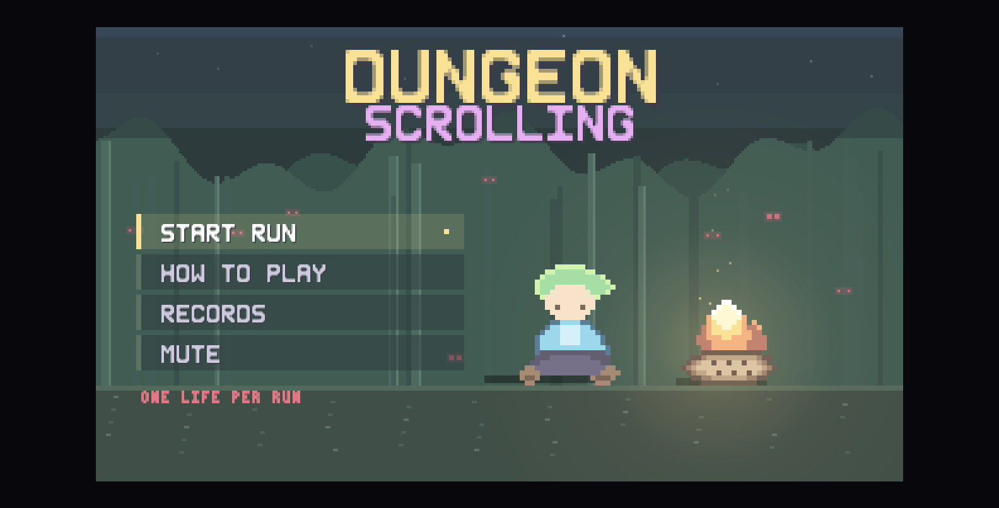
Satu layar, dikelompokkan: gerak, tempur, dan item - masing-masing berupa baris keycap + aksi. Isinya harus konsisten dengan CONTROL_ROWS di Bab 3.4.
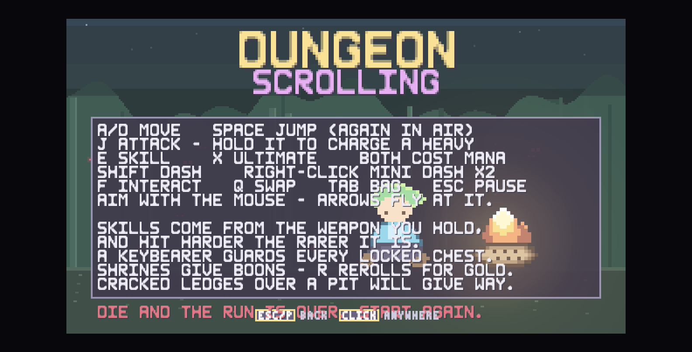
[CODE] Membaca DS.Storage.load() dan menampilkan: BEST DEPTH, RUNS, TOTAL KILLS, item terbaik (bestItemName + warna rarity-nya), dan FASTEST CLEAR (format mm:ss dari fastestClearFrames). Tombol RUN AGAIN masuk ke DS.Scenes.loadout() (langsung pilih senjata, intro di-skip), MENU kembali ke menu utama.
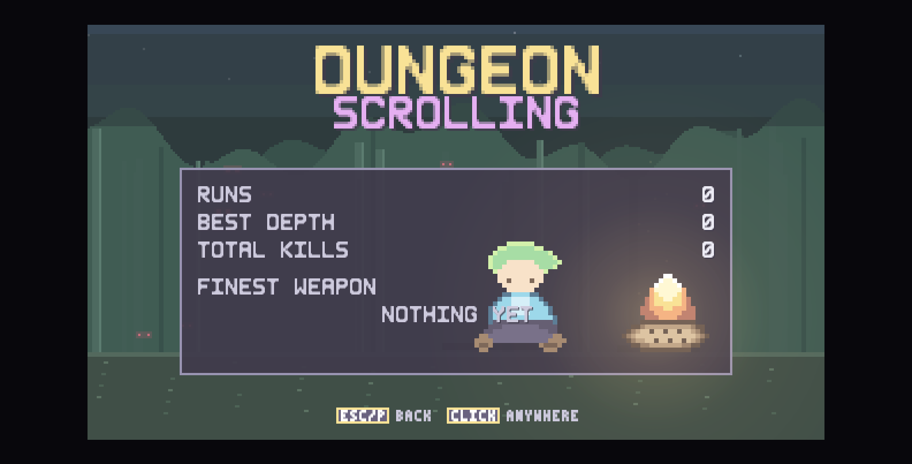
[CODE] src/scenes/menu.js:322 - enam pilihan dengan urutan sword, dagger, spear, greataxe, bow, staff, disusun 3 kolom (cw=92, ch=26, gapX=4, gapY=4, di tengah frame). Setiap kartu menampilkan nama, blurb, statistik inti, dan skill/ult yang akan didapat. Tawaran selalu versi paling polos dari archetype itu (rarity common, tanpa affix, tanpa elemen), supaya pilihan menentukan cara main, bukan kekuatan awal.
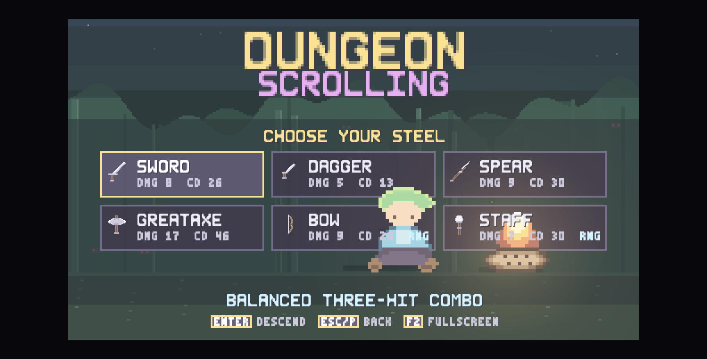
[CODE] src/scenes/cutscene.js - empat fase dengan panjang frame tetap:
| Fase | Frame | Isi |
|---|---|---|
WALK | 170 | Hero jalan, koridor bergulir (SCROLL = 1.15 px/frame) |
EDGE | 62 | Berhenti di tepi, lantai retak |
FALL | 118 | Jatuh |
LAND | 46 | Mendarat di lantai 1 |
Total 396 frame (~6,6 detik) dan bisa di-skip. Dunia digambar dengan tile dan art hero yang sama dengan gameplay (tidak ada aset khusus cutscene). Lantai 1 memakai biome DS.Biomes.forDepth(1).
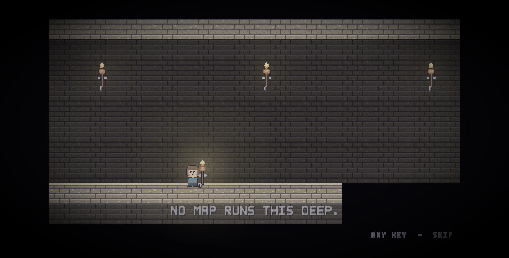
[CODE] src/scenes/menu.js (createGameOver) - judul merah YOUR RUN ENDS HERE saat mati dan emas THE DUNGEON IS CLEARED saat menang. Panjangnya sama, isinya: DEPTH REACHED, ENEMIES SLAIN, COINS, TIME, BEST WEAPON, dan badge NEW RECORD berkedip kalau rekor terlewati. Di sinilah Storage.recordRun() dipanggil - tepat sekali per run.
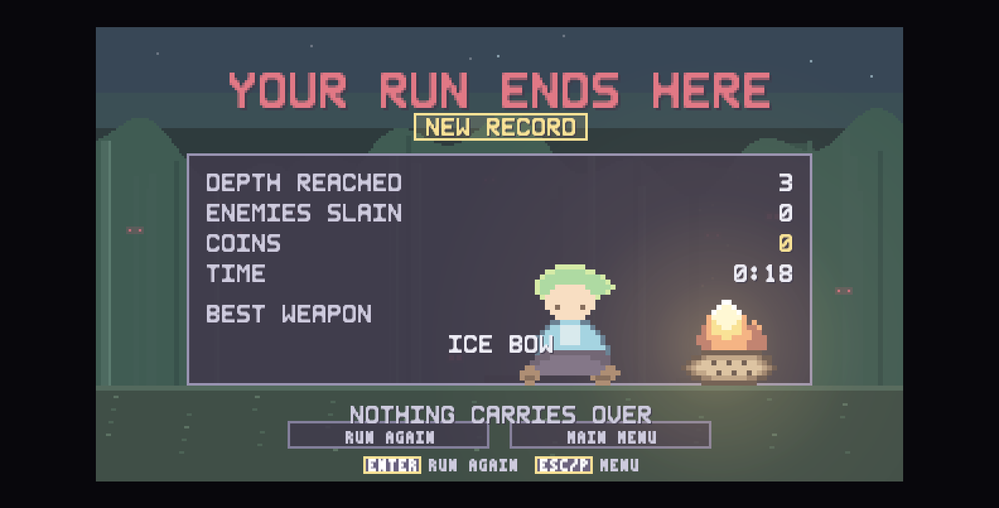
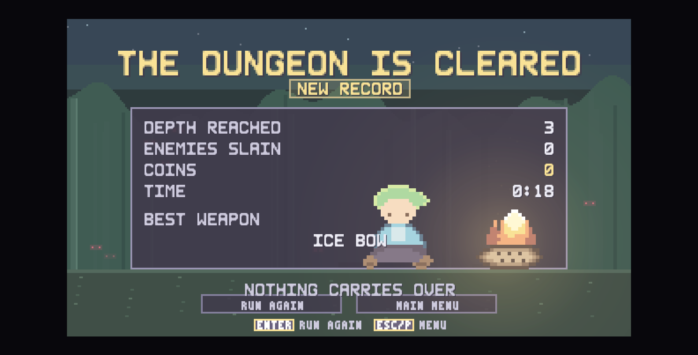
Profil punya tiga tab, semuanya digambar di dalam frame yang sama dan sengaja memakai gutter kanan yang direservasi supaya tidak pernah tertutup plate mata uang:
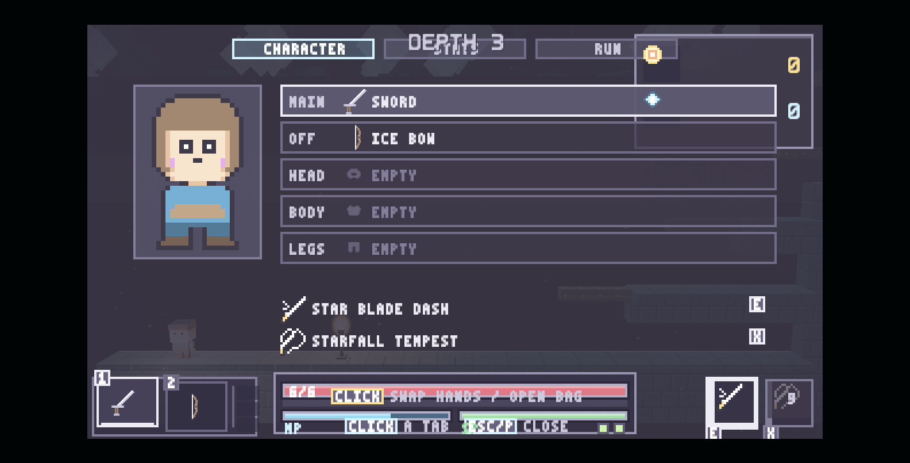
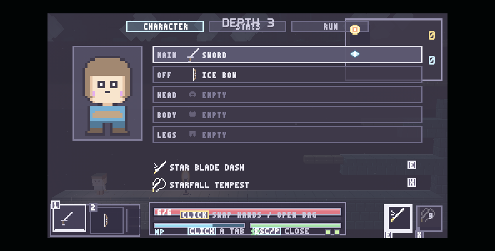
[CODE] src/ui/ui.js:35 menyusun HUD dalam tata letak action-RPG: vital di bawah tengah, kemampuan di kanan bawah, mata uang di kanan atas, dan hanya nama lantai di atas. Berikut koordinat persisnya (unit logis 320x180):
| Klaster | Posisi | Isi |
|---|---|---|
| Nama lantai | tengah atas, y = 4 | DEPTH n (atau SAFE ROOM, THRONE ROOM, THE TRIAL) |
| Vital | W2 = 150, X = (320-150)/2 = 85, Y = 154 | Panel membungkus bar HP (6 px), shield (3 px), MP+SP (4 px masing-masing), dan 3 pip mini-dash |
| Mata uang | x = 320-78-4 = 238, y = 4, w = 78 | Baris ikon 16x16: koin, shard, dan kunci hanya jika `keys > 0`; tinggi 10 + 20*rows |
| Skill | x = 320-50 = 270, y = 180-26 = 154 | Dua tile 16x16 (E = skill, X = ult) dengan keycap di sudut dan cooldown sebagai shutter |
| Senjata | kanan bawah | Kartu senjata: nama, rarity, elemen, dan damage |
| Boon | kiri atas | Daftar buff aktif |
| Boss bar | atas | Bar boss + nama, hanya saat g.boss && !g.boss.dead |
| Prompt interaksi | y = 178-46 = 132 | [F] DESCEND, [F] OPEN dsb., disembunyikan saat modal/pause |
| Kartu kontrol | y = 96, tinggi 36 | Tiga baris CONTROL_ROWS, memudar keluar setelah beberapa detik |
Readout kamera (F6) muncul di x = 320-136 = 184, y = 30, w = 132 dan menampilkan nama preset plus dua sudutnya; ini alat pengembangan, bukan fitur pemain (lihat BUG-015).
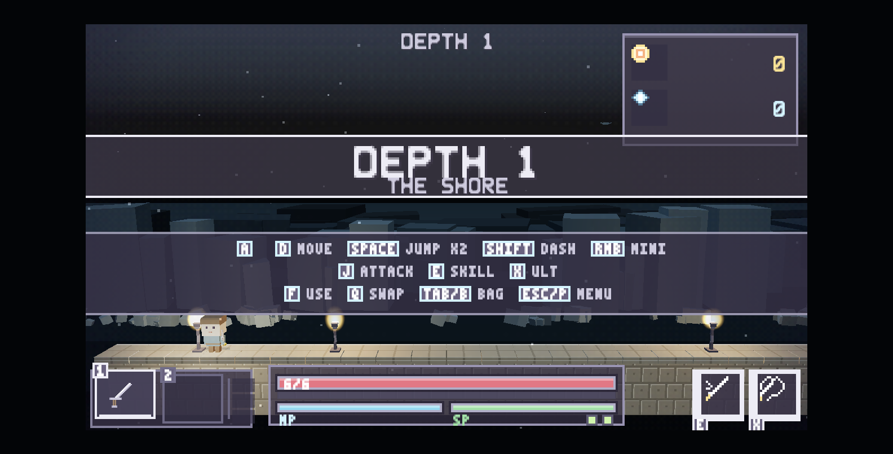
Klaster skill diberi komentar eksplisit di kode: ia dipaut dari tepi kanan dengan lebar klaster itu sendiri, supaya tile kedua dan keycap-nya tidak pernah melewati frame 320 px.
[CODE] src/art/icons.js adalah katalog ikon 1:1 (309 baris) yang dipakai HUD, bag, dan menu: koin, shard, kunci, speaker (untuk mute), ikon biome, ikon skill per archetype, ikon senjata, ikon armor, dan beberapa glyph tab. Ikon digambar pada ukuran atlasnya (2x) sehingga satu ikon = 16x16 unit logis untuk plate mata uang, dan 8x8 untuk keycap.
[CODE] src/ui/pointer.js - kursor digambar sendiri, bukan kursor sistem:
CURSOR_PX = 2 dan unit() mengembalikan CURSOR_PX / skala, sehingga kursorberukuran sama di semua monitor (ini yang dulu sebabkan kursor raksasa di layar FullHD, karena ukurannya dulu ikut skala 6x).
arrowCanvas(accent) membuat versi beraksen untukkeadaan tertentu.
Ptr.beginFrame() mencatat titik tekan dan ambang drag sebelum layar mana punbertanya "apakah diklik".
startDrag(item, from), clearDrag(),dragging().
Kursor digambar sekali di akhir main.js untuk seluruh scene (Ptr.drawCursor(current.cursor)), sehingga tidak ada layar yang bisa lupa menggambarnya atau menggambarnya dua kali. Scene run memakai cursor: 'none' karena reticle bidik adalah kursor di dalam run.
Catatan perbaikan. Kursor sekarang mengikuti ukuran perangkat: pada monitor FullHD skala 6, kursor tetap seukuran normal karena digambar dalam piksel perangkat (bukan unit logis). Inilah jawaban atas keluhan "cursor kekecilan / harus zoom".
Semua yang ada di bab ini dimiliki oleh src/entities/player.js (1.075 baris) untuk perilaku, src/items/inventory.js untuk statistik, dan src/systems/physics.js untuk tabrakan.
[CODE] src/items/inventory.js:20
| Stat | Nilai awal | Catatan |
|---|---|---|
maxHp | 6 | Ditampilkan sebagai bar, bukan deretan hati |
hp | 6 | Angka di atas bar |
maxStamina | 100 | Serangan & dash memakainya |
staminaRegen | 0.55 /frame | ~33 per detik |
maxMana | 100 | Hanya skill (E/X) dan staff yang memakainya |
manaRegen | 0.28 /frame | ~17 per detik |
moveSpeed | 1.45 px/frame | ~87 px/detik |
dashCharges | 1 | Dash besar, bukan mini-dash |
iframes | 34 frame | ~0.57 detik kebal setelah kena |
jumpVel | 5.3 | Kecepatan lompat |
coinBonus, thorns | 0 | Diisi boon/armor |
arrows | 20 | Amunisi bow; tidak dipakai staff |
[CODE] src/entities/player.js:20
| Konstanta | Nilai | Artinya |
|---|---|---|
COYOTE | 6 frame | Masih boleh lompat setelah keluar dari tepi |
JUMP_BUFFER | 6 frame | Tekanan lompat tetap antre sesaat sebelum mendarat |
DASH_FRAMES | 12 | Lama dash |
DASH_SPEED | 4.2 | Kecepatan dash (2,9x lari) |
DASH_IFRAMES | 10 | Dash punya kebal sendiri |
DASH_COOLDOWN | 34 | ~0.57 detik |
AIR_JUMPS | 1 | Lompat ganda = 1 lompatan tambahan di udara |
MINI_CHARGES | 2 | Mini-dash (klik kanan) |
MINI_RECHARGE | 120 | 2 detik per charge |
MINI_FRAMES | 7 | Lama mini-dash |
MINI_SPEED | 3.1 | Kecepatan mini-dash |
MINI_IFRAMES | 5 | Kebal singkat |
MINI_STAMINA | 8 | Biaya stamina |
ROPE_CLIMB | 1.35 | Kecepatan naik tali |
BODY_OVERLAP | 5 | Toleransi tabrakan badan |
AIM_MAX_PITCH | 1.0 rad (~57 derajat) | Batas atas/bawah arah bidik |
Fisika dunia [CODE] src/core/rng.js:11: GRAVITY = 0.34 px/frame² dan MAX_FALL = 6.4 px/frame. Nilai gravitasi inilah yang dipakai ulang oleh systems/reach.js saat memutuskan apakah sebuah tanjakan bisa dijangkau - satu angka, dua pemakai, sehingga level yang lolos pemeriksaan pasti bisa diselesaikan.
[CODE] player.js:40
| Konstanta | Nilai | Artinya |
|---|---|---|
SHIELD_PER_HEART | 6 | 1 poin shield = 1/6 hati |
SHIELD_DELAY | 360 frame (6 detik) | Tenang dulu sebelum shield kembali |
SHIELD_RATE | 1/20 | Satu poin per 20 frame setelah delay |
Shield berasal dari armor yang dipakai (Bab 4.4) dan digambar sebagai bar tipis 3 px tepat di bawah bar HP.
[CODE] src/core/input.js:12 - game tidak pernah melihat kode tombol; ia hanya bertanya "apakah aksi jump ditekan?".
| Aksi | Keyboard | Mouse | Gamepad |
|---|---|---|---|
left / right | A / D, panah kiri-kanan | - | PAD14/PAD15, stik kiri |
up / down | W / S, panah atas-bawah | - | PAD12/PAD13 |
jump | Space, W, panah atas | - | PAD0 |
attack | J | Klik kiri | PAD2 |
dash | Shift kiri/kanan | - | PAD5/PAD7 |
minidash | C | Klik kanan | PAD10 |
interact | F | - | PAD1 |
skill | E | - | PAD3 |
ult | X | - | PAD11 |
swap | Q | - | PAD4/PAD6 |
bag | Tab, B | - | - |
reroll | R | - | PAD8 |
pause | Escape, P | - | PAD9 |
confirm | Enter, NumpadEnter | - | PAD0 |
back | Escape, P, Backspace | - | PAD1 |
debug | F1 | - | - |
Dua keputusan desain yang tercatat di kode:
Tab dan Escapeadalah dua tombol yang diinginkan halaman inang (urutan fokus, tutup panel); karena game ini bisa berjalan di dalam panel preview atau shell, kedua aksi itu juga tersedia di tombol yang tidak diperebutkan siapa pun.
menu, sehingga tombol lompat mengonfirmasi dialog - membingungkan begitu layar menampilkan hint.
Handler keyboard dipasang di fase capture dan 10 tombol masuk daftar SWALLOW (Space, Tab, Escape, panah, Backspace, F1, Slash, Quote); untuk tombol itu game memanggil preventDefault() + stopImmediatePropagation() supaya halaman inang tidak ikut bereaksi. Kombinasi dengan Ctrl/Cmd/Alt dilewatkan seluruhnya, sehingga Ctrl+Tab, Cmd+R, dan Alt+F4 tetap milik browser.
Risiko yang perlu diketahui. Karena handler ini menelan 10 kode tombol di fase capture, aplikasi/host tempat game dibenamkan tidak akan menerima tombol tersebut selama game berjalan. Ini konsekuensi yang disengaja, bukan bug.
[CODE] player.js:592 (handleAttack). Perilaku ditentukan holdMode senjata (Bab 4.1):
menabung charge sampai chargeMax frame, lalu melepas memicu heavy attack dengan pengali chargeBonus dan jangkauan heavyReach kali lebih jauh.
makin lama ditahan makin kuat tembakannya. Anak panah terkena gravitasi (shot.gravity = 0.045), bola staff tidak terkena gravitasi.
Charge baru dihitung sebagai charge nyata setelah CHARGE_MIN = 10 frame.
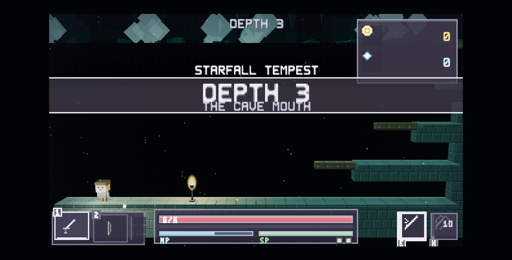
[CODE] player.js:554 (aimVector)
AIM_MAX_PITCH = 1.0 rad (~57 derajat) ke atas maupun ke bawah.
refreshAim(p) menyimpan hasilnya; proyektil memakai vektor ini, jadi arahtembakan mengikuti kursor dalam batas fisika yang masuk akal (tidak bisa menembak lurus ke atas atau ke bawah).
[CODE] renderer3d.js + player.js
| Keadaan | rotation.y model | scale.x |
|---|---|---|
| Diam (idle) | 0 (menghadap depan) | +1 |
| Jalan ke kiri | -72 derajat | -1 (dicerminkan) |
| Jalan ke kanan | +72 derajat | +1 |
| Berhenti | kembali 0 | +1 |
Aturan ini sama untuk MC dan monster: p.facing (MC) dan e.facing (monster) sama-sama menandatangani yaw saat berjalan. Bug yang pernah ada: pencerminan scale.x = -1 membalik badan tetapi tidak membalik muka (muka ada di sumbu +Z, cermin X tidak menyentuhnya), sehingga kiri dan kanan mendapat yaw yang sama dan monster tampak "menghadap ke dalam layar". Perbaikannya adalah menandatangani yaw dengan arah gerak, bukan mengandalkan cermin.
[CODE] player.js:111 (hurt)
iframes > 0 → tidak ada damage (dash dan mini-dash memberi iframe sendiri).iframes di-set ulang ke stats.iframes (34 frame, bisa ditambah boon VIGIL+20 frame).
SHIELD_DELAY di-set 360 frame: shield baru mulai tumbuh lagi setelah 6 detiktanpa damage.
THORNMAIL, set OBSIDIAN 50%).hp <= 2 (Bab 7.5).updateRope() (player.js:294) menangani naik-turun tali dengan kecepatanROPE_CLIMB = 1.35. Karena itu, lantai yang memuat tali sebagai satu-satunya jalan naik wajib menempatkan tali sampai ke dasar lantai yang akan ditinggalkan.
yang dicetak systems/reach.js (Bab 7.7), bukan animasi khusus.
[CODE] player.js:190 (update) secara berurutan:
In.isDown('left') dsb.).move() - kecepatan horizontal, akselerasi, gesekan.handleJump() - coyote time, jump buffer, lompat ganda.handleDash() / startMiniDash() / updateDash().updateRope() bila sedang di tali.checkWater() - menentukan status berenang/lembab (memengaruhi elemen air).refreshAim() - arah bidik dari kursor.handleAttack() / handleReleaseWeapon() / handleSkills().MAX_FALL lewat systems/physics.js.checkHazards() - paku, bola berduri, gergaji, platform runtuh.regen() - stamina, mana, shield.dead = true → scenes/game.js menyerahkan ke layar game over.[CODE] scenes/game.js:784 (updatePause) + g.modal
| Keadaan | Efek |
|---|---|
g.paused | Update dunia berhenti; layar pause digambar |
g.modal | Modal aktif (bag, enchant, shop, shrine); dunia berhenti, prompt interaksi disembunyikan |
| Keduanya kosong | Dunia berjalan normal |
Saat modal terbuka, HUD tidak lagi digambar di belakangnya (satu layar satu momen) - ini menghilangkan kebocoran visual berupa banner lantai yang terlihat menembus panel bag.
Semua angka tuning item hidup di tiga file saja: items/weapons.js (archetype, rarity, elemen), items/affixes.js (prefix/suffix), items/armor.js (armor dan set bonus). Roll loot ada di items/generator.js, dan pemakaian/pemindahan ada di items/inventory.js.
[CODE] src/items/weapons.js:12. Semua cooldown dan charge dalam frame 60fps.
| Senjata | Damage | Cooldown | Crit | Knockback | Stamina | Combo | Kotak pukul (w x h, oy) | mode tahan | chargeMax | chargeBonus | heavyReach | Blurb |
|---|---|---|---|---|---|---|---|---|---|---|---|---|
| Sword | 8 | 26 | 8% | 2.2 | 6 | 3 | 24 x 16, oy -1 | heavy | 40 | 2.1x | 1.35x | Kombo tiga pukulan seimbang |
| Dagger | 5 | 13 | 26% | 1.1 | 3 | 3 | 18 x 14, oy 0 | heavy | 26 | 2.5x | 1.6x | Cepat, crit tinggi, jangkauan pendek |
| Greataxe | 17 | 46 | 6% | 4.6 | 14 | 1 | 30 x 22, oy -3 | heavy | 48 | 1.9x | 1.3x | Lambat, damage besar, knockback besar |
| Spear | 9 | 30 | 10% | 2.6 | 7 | 2 | 34 x 10, oy +2 | heavy | 36 | 2.0x | 1.45x | Tusukan lurus panjang, jarak aman |
| Bow | 9 | 26 | 14% | 1.4 | 4 | - | proyektil arrow | release | 34 | 2.2x | - | Tahan untuk menarik, lepas untuk menembak |
| Staff | 7 | 30 | 8% | 1.8 | 0 | - | proyektil orb | release | 40 | 1.9x | - | Memakai mana 9, charge untuk bola lebih besar |
Detail proyektil: arrow speed 4.4, gravity 0.045, life 150 frame; orb speed 2.7, gravity 0, life 120 frame.
[CODE] src/items/weapons.js:48
| Rarity | Warna | Slot affix | Pengali damage | Bobot drop di depth 1 |
|---|---|---|---|---|
| Common | #d8d5e8 | 0 | 1.00x | 55 |
| Uncommon | #5cbf62 | 1 | 1.12x | 27 |
| Rare | #4fb3e0 | 2 | 1.28x | 13 |
| Epic | #c86ee0 | 3 | 1.50x | 4.5 |
| Legendary | #e8743b | 4 | 1.85x | 0.5 |
Bobot ini digeser ke atas seiring kedalaman lewat rarityBias = (depth-1) * 0.42 di systems/difficulty.js. Semakin dalam, semakin sering yang bagus muncul, tetapi common tidak pernah hilang sepenuhnya.
[CODE] src/items/affixes.js - 8 prefix elemen dan 12 affix statistik.
| Kelompok | Daftar |
|---|---|
| Prefix elemen | Flaming, Frozen, Shocking, Toxic, Drenching, Stony, Verdant, Gale |
| Prefix statistik | Vampiric, Cruel, Swift, Piercing, Heavy, Keen, Reaching |
| Suffix | of the Bear, of the Cat, of Greed, of the Owl, of Thorns, of the Turtle, of the Wind, of Warding |
Jumlah slot affix sebuah item ditentukan rarity-nya (kolom "Slot affix" di 4.2), jadi item Legendary adalah "mantra yang kebetulan punya gagang".
[CODE] src/items/armor.js - tiga slot: head, chest, legs. Delapan material, dengan set bonus kalau ketiganya satu material:
| Material | Tier | Shield | Berat | Set bonus |
|---|---|---|---|---|
| Cloth | 0 | 2 | 0 | NIMBLE: +12% kecepatan gerak |
| Leaf | 1 | 3 | 0 | GROVE: +20% kecepatan, +1 lompatan udara |
| Leather | 1 | 5 | 1 | TANNER: shield pulih dua kali lebih cepat |
| Bone | 2 | 7 | 1 | OSSUARY: +15% damage, -30% shield |
| Iron | 3 | 10 | 3 | BULWARK: kebal knockback |
| Gold | 3 | 9 | 2 | MIDAS: +40% koin, +1 shard per peti |
| Crystal | 4 | 12 | 2 | RESONANCE: +40 mana, skill 25% lebih murah |
| Obsidian | 4 | 14 | 4 | SHARDSKIN: memantulkan 50% damage sentuh |
Armor langsung memengaruhi statistik pemain lewat Inv.applyArmor(); shield tampil sebagai bar tipis di HUD, dan potongan armor yang dipakai digambar pada boneka karakter di tab profil.
[CODE] src/items/generator.js:205
| Tier | Label | Rarity min | Rarity maks | Bias | Item | Koin | Terkunci | Ambush |
|---|---|---|---|---|---|---|---|---|
wood | Wooden Chest | 0 | 2 | 0.0 | 1 | 8-18 | tidak | - |
iron | Iron Chest | 1 | 3 | 0.9 | 1 | 18-34 | ya (butuh kunci) | - |
cursed | Cursed Chest | 3 | 4 | 2.4 | 1 | 30-55 | tidak | 3 musuh |
vault | Vault Chest | 2 | 4 | 2.0 | 2 | 45-80 | tidak | - |
Bobot roll acak: wood 62, iron 27, cursed 11. vault tidak pernah di-roll; peti itu selalu ditempatkan di dalam vault terkunci (teka-teki atau sayap bonus).
Modifier STARVED menambah chestBonus: 2 ke rarity min dan max, dan gold armor set menambah 1 shard per peti.
[CODE] src/systems/boons.js - 26 boon, diberikan dari shrine atau hadiah lantai. Contoh yang membentuk build:
| Boon | Efek |
|---|---|
BLOODTHIRST | +15% damage, -1 max heart |
IRONHIDE | +2 max heart, -10% kecepatan |
FEATHERWEIGHT | +20% kecepatan, +20 stamina |
SHARPSHOOTER | +12% crit chance |
OVERFLOW | +50 max mana, regen lebih cepat |
CONDUIT | Skill 35% lebih murah |
GOLDEN TOUCH | +30% koin, +1 shard per peti |
BERSERKER | +35% damage saat di bawah 3 hati |
MOMENTUM | Momentum terisi dua kali lebih cepat |
BLOOD HARVEST | Tiap 10 kill memulihkan 1 hati |
FLEETFOOT | +1 mini dash charge |
RICOCHET | Proyektil menembus satu musuh lagi |
VIGIL | +20 frame kebal setelah kena |
RUIN | Heavy attack +50% |
WHETSTONE | +10% damage, -15 stamina |
STONEHEART | +1 max heart, -8% damage |
IRONBLOOD | +2 max heart, -12% damage |
DUELIST | +18% damage saat hati penuh |
SIPHON | Kill memulihkan 8 stamina, 6 mana |
THORNMAIL | Penyerang kena 2 damage, -6% kecepatan |
Semuanya punya trade-off: setiap boon menaikkan satu hal dan menurunkan hal lain, sehingga tidak ada pilihan yang jelas "terbaik".
[CODE] src/ui/ui.js (drawBag, updateBag, bagTargets)
Tiga jenis tujuan pemindahan item:
ref.kind | Arti |
|---|---|
weapon (index 0/1) | Dua slot senjata yang bisa di-Q untuk bertukar |
armor (slot head/chest/legs) | Tiga slot armor |
bag (index) | Tas; hanya menerima item apa pun |
Aturan yang ditegakkan Inv:
armor dengan slot yang cocok. Kalau salah → pesan NOT A WEAPON / WRONG SLOT.
BAG FULL.F di bag) menjadi pickup di dunia, bukan hilang.Boneka karakter di bag digambar dengan drawDoll() memakai art paperdoll 2D pada jendela berukuran tetap. Posisi jendela itu sekarang identik dengan sebelum pass UI terakhir (sprite 24x68 di dalam jendela 48x86), jadi tidak ada tata letak yang bergeser.
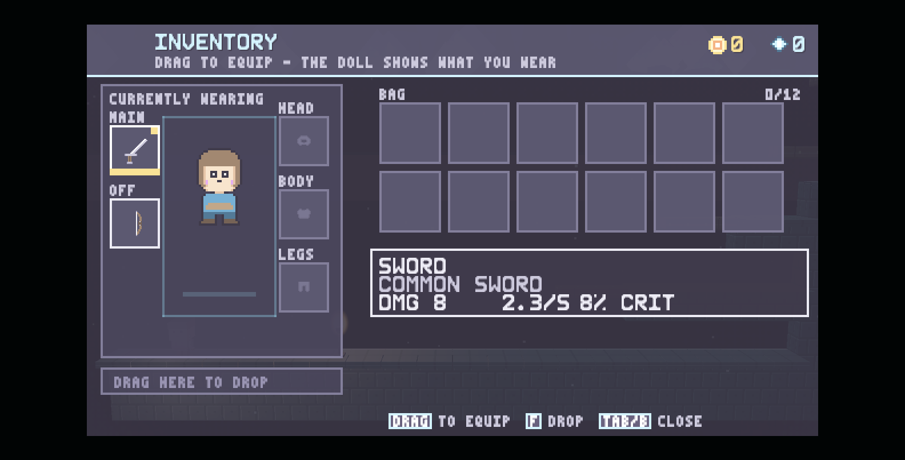
[CODE] src/items/inventory.js:405 - harga naik mengikuti kedalaman (depth = kedalaman lantai saat toko itu muncul):
| Barang | Efek | Harga (koin) |
|---|---|---|
| BREAD | Pulihkan 2 hati | 20 + depth*5 |
| QUIVER | +15 anak panah | 16 + depth*3 |
| SHARD POUCH | +4 shard | 50 + depth*12 |
| HEART VESSEL | +1 max heart | 80 + depth*20 |
| SWIFT BOOTS | +1 dash charge | 95 + depth*22 |
| GREEN FLASK | +30 max stamina | 45 + depth*10 |
Semua pembelian bersifat per-run: mati berarti semuanya hilang, sesuai prinsip roguelike murni di core/storage.js (tidak ada meta-progression).
[CODE] src/ui/ui.js (openEnchant, updateEnchant, applyEnchant, priceTag). Biaya dibayar dengan shard, bukan koin. Layar ini menampilkan senjata aktif, slot affix yang tersedia, dan harga tiap rite. actionCost() menghitung biaya sesungguhnya termasuk diskon boon.
[CODE] src/ui/ui.js:474
rollOffers), pemain mengambil satu.kind: 'gift').rerollCost() = REROLL_BASE + REROLL_STEP * rerolls.
spent dan menampilkan THE SHRINE IS SPENT.[CODE] inv.keys sudah terdefinisi, sudah dihitung di HUD (baris ketiga plate mata uang muncul hanya kalau keys > 0), dan iron chest sudah bertanda locked: true. Ini berarti rantai "kunci → peti besi" sudah setengah jadi; yang belum ada adalah (a) sumber kunci di dunia, dan (b) indikator kunci di daftar tab profil. Ini masuk register isu sebagai BUG-014 (Bab 9).
Catatan desain. Ekonomi punya dua mata uang dengan peran berbeda: koin membeli kenyamanan jangka pendek (toko, reroll shrine) dan shard membeli kekuatan jangka panjang pada senjata (enchant). Karena keduanya per-run, tidak ada inflasi antar-run.
Tempur punya tiga lapisan: pukulan senjata (Bab 4.1), skill khusus senjata (systems/skills.js), dan sistem elemen (systems/elements.js, 952 baris - file gameplay terbesar kedua setelah renderer).
[CODE] src/systems/skills.js:19
| Konstanta | Nilai |
|---|---|
SKILL_COST | 25 mana |
ULT_COST | 60 mana |
SKILL_COOLDOWN | 100 frame (~1,7 detik) |
ULT_COOLDOWN | 620 frame (~10,3 detik) |
power(item) | 1 + rarity * 0.26 (skill makin kuat per tingkat rarity) |
extra(item) | floor(rarity / 2) proyektil/hit tambahan |
scaled() | item.stats.damage * base * power * Player.damageMult() |
Dua belas kemampuan:
| Senjata | Skill (E) | Ultimate (X) |
|---|---|---|
| Sword | STAR BLADE DASH | STARFALL TEMPEST |
| Dagger | PHANTOM FLURRY (5 tusukan) | PHANTOM FLASH |
| Greataxe | MEGA SLAM | RAGNAROK SPIKES |
| Spear | DRAGON PIERCER | DRAGON COMET |
| Bow | SHOOTING STAR VOLLEY | SUPERNOVA ARROW |
| Staff | BOUNCY BUBBLE NOVA | COSMIC CATACLYSM |
Mekanisme internal: kemampuan multi-frame memasang sebuah routine pada pemain (routine(p, frames, fn)) yang dipanggil tiap frame sampai habis. Ini menjaga logika timing keluar dari update() utama. Hit berulang dilindungi daftar hits supaya sapuan berjalan tidak mengenai musuh yang sama dua kali per tick.
Kemampuan mewarisi bonus damage global pemain dan juga proc enchant senjatanya, jadi senjata api legendaris benar-benar melepas lebih banyak api.
[CODE] src/systems/elements.js:20 dan tabel yang sama di items/weapons.js:75
| Elemen | Warna | SFX | Efek dasar pada target |
|---|---|---|---|
| Fire | #e8743b | fire | burn 150 frame, tick tiap 22 frame, damage 0.16 x power; meninggalkan field api |
| Ice | #4fb3e0 | ice | chill 140 frame, lambat 45%; tiga chill berturut menahan beku (freeze 100 frame) |
| Lightning | #f2c14e | lightning | shock 34 frame, memicu arc() damage 45% ke 2 musuh sekitar |
| Poison | #5cbf62 | cast | poison 240 frame, tick tiap 30 frame, damage 0.12 x power |
| Water | #2f6fa8 | ice | wet 260 frame, lambat 15% |
| Earth | #b98d5c | slam | brittle 300 frame (armor pecah) + memantul ke atas vy = -2.2 |
| Leaf | #a3e86b | swing | root 90 frame (musuh tidak bisa bergerak) |
| Wind | #cfe8e0 | swing | Tidak memberi status sendiri; mengaduk aura yang sudah ada dan melemparnya ke tetangga |
Aura bertahan AURA_FRAMES = 200 frame di target dan hanya selama itu bisa direaksikan. Angka ini adalah inti pacing combat elemental: cukup lama untuk menyusun kombo dua elemen, tidak cukup lama untuk menumpuk semua.
[CODE] src/systems/elements.js:670 - saat skill elemen mendarat, lantai di titik itu menjadi field yang punya perilakunya sendiri:
| Field | Warna | Umur | Radius | Tick | Damage | Menyebar | Catatan |
|---|---|---|---|---|---|---|---|
| fire | rgba(232,116,59,0.20) | 300 | 22 | 20 | 0.14 | 0.10 | Menyalakan cahaya (lights: true) |
| poison | rgba(92,191,98,0.20) | 420 | 30 | 30 | 0.10 | 0.06 | Berbentuk kabut (mist) |
| water | rgba(47,111,168,0.22) | 480 | 26 | 0 | 0 | 0 | Genangan: membuat basah |
| ice | rgba(79,179,224,0.18) | 360 | 26 | 0 | 0 | 0 | Area lambat |
| lightning | rgba(242,193,78,0.20) | 170 | 20 | 20 | 0.10 | 0 | Menyalakan cahaya, umur pendek |
| earth | rgba(185,141,92,0.22) | 340 | 24 | 40 | 0.08 | 0.05 | Gundukan |
| wind | rgba(207,232,224,0.14) | 200 | 26 | 0 | 0 | 0.09 | Mendorong |
| leaf | - | 300 | 22 | 20 | 0.10 | 0.08 | Tumbuh |
Field juga bereaksi satu sama lain: api yang jatuh ke genangan air berubah menjadi uap. Field yang mendarat dibatasi maxR, sehingga tidak menyebar tak terbatas.
Pelajaran dari bug yang pernah terjadi. Field dulu menggambar cakram nyaris hitam (
0x17131f, opasitas 0.5) sebesar radius field-nya, sehingga setiap kali skill elemen mendarat muncul bercak gelap di lantai yang terlihat seperti lubang. Sekarang field menggambar glow berwarna elemennya sendiri.
[CODE] src/systems/elements.js:239-620. Setiap pasangan elemen punya nama dan efeknya sendiri - tidak ada pasangan yang tidak didefinisikan. Daftar lengkap namanya:
ELECTROCUTE, DEEP FREEZE, STEAM, SHATTER, TOXIC BLAST, WILDFIRE, CONDUCT, PERMAFROST, CONTAGION, OVERGROWTH, SUPERCONDUCT, MAGMA, BLOOM, BLIGHT, BRUSHFIRE, OVERLOAD, FIRESTORM, WITHER, TOXIC FROST, BLIZZARD, GALE SEED, VENOM ARC, THUNDERSTORM, MIASMA, PLAGUE WIND, MUDSLIDE, MISTRAL, SANDSTORM.
Reaksi adalah inti dari sistem ini, bukan bonus kecil: petir ke musuh yang basah bukan "petir + cipratan", melainkan ELECTROCUTE yang melompat ke semua musuh basah di lantai itu. Ini yang membuat kombinasi senjata-aura-skill terasa seperti build, bukan sekadar angka lebih besar.
[CODE] items/weapons.js:100
| Jalur | Keterangan |
|---|---|
| Prefix affix | Flaming, Frozen, Shocking, Toxic, Drenching, Stony, Verdant, Gale |
| Senjata staff | Selalu elemental, memakai mana |
| Rarity | ELEMENT_SHARE = [0.15, 0.26, 0.38, 0.50, 0.62] - proporsi damage senjata yang keluar sebagai elemen, per tingkat rarity |
Konsekuensi desainnya disengaja: senjata common adalah senjata fisik dengan sedikit rasa, senjata legendary adalah mantra yang kebetulan punya gagang.
[CODE] src/systems/particles.js (454 baris) + src/art/fxart.js
| Efek | Pemicu |
|---|---|
DS.FX.element(elemen, x, y, opts) | Skill/proyektil elemen mendarat, dengan warna spark per elemen (spark[0..2]) |
DS.FX.dust(x, y, n) | Mendarat, ledakan, kaki melangkah |
DS.FX.trail(x, y, color) | Jejak proyektil dan dash |
| Gore partikel | Musuh mati; warna diambil dari cfg.gore masing-masing monster |
DS.R.shake() | Heavy attack, ultimate, ambience lantai dalam |
Charge attack punya gaya per senjata (CHARGE_STYLE di player.js:650) dan diperbarui oleh chargeFx(): aura di sekitar senjata yang tumbuh sesuai rasio charge. Efek khusus heavy sudah ada untuk tiap archetype (ayunan sword, tusukan spear, tarik bow, cast staff).
Animasi serangan tersinkron dengan swingTimer: durasi ayunan senjata menentukan kapan kotak pukul aktif, sehingga hitbox dan animasi tidak pernah berbeda.
[CODE] src/core/audio.js - 30 lebih SFX disintesis, termasuk yang khusus elemen: fire, ice, lightning, cast, shoot, slam, swing, hit, crit, block, hurt, die. Empat mood musik (MOODS) dipilih per konteks (calm di menu, berubah saat boss, dan seterusnya).
Monster dibagi dua file: entities/enemies.js (empat monster dasar + rank + tabel spawn) dan entities/enemies2.js (tujuh monster lantai dalam). Satu monster lagi, piranha, mendaftarkan dirinya dari world/water.js. Boss ada di tiga file: entities/boss.js (Slime King), entities/bosses.js (Stone Warden, Arbiter).
[CODE] entities/enemies.js:1 - damage sentuh bukan lagi ancaman utama. Setiap monster berkomitmen pada serangan yang bisa dibaca, dalam tiga fase:
| Fase | Arti | Isyarat visual |
|---|---|---|
wind | Persiapan serangan | Kilatan warna, garis bidik, badan mengempis |
strike | Frame yang benar-benar melukai | Musuh bergerak/menyerang |
recover | Jendela hukuman | Musuh terbuka, tidak bisa menyerang |
Hanya badan slime (saat melompat) dan bat (saat menukik) yang masih melukai karena sentuhan - dan keduanya bergerak dengan cara yang terbaca saat itu.
[CODE] entities/enemies.js:22
| Monster | w x h | HP | Sentuh | Kecepatan | Jarak lihat | Armor | wind/strike/recover | Jangkauan | Damage |
|---|---|---|---|---|---|---|---|---|---|
| Slime | 12 x 9 | 9 | 1 | 0.55 | 110 | 0 | 26 / 30 / 34 | 60 | 1 |
| Zombie | 9 x 14 | 20 | 0 | 0.42 | 160 | 1 | 30 / 10 / 30 | 22 | 2 |
| Bat | 10 x 8 | 5 | 0 | 1.15 | 150 | 0 | 26 / 26 / 40 | 70 | 1 |
| Skeleton | 9 x 14 | 11 | 0 | 0.5 | 200 | 0 | 32 / 6 / 46 | 190 | 1 |
Catatan: bat terbang (flying: true), skeleton jarak jauh (ranged: true, jangkauan 190 px - ia menembak, dan proyektilnya terlihat oleh pemain), zombie dan skeleton punya kotak pukul yang lebih lebar daripada badannya (hitbox 20x14 dan 30x18) supaya tebasan terasa adil.
[CODE] entities/enemies2.js:870-925
| Monster | w x h | HP | Kecepatan | Lihat | Armor | wind/strike/recover | Range | Damage | Kunci perilaku | Muncul dari |
|---|---|---|---|---|---|---|---|---|---|---|
| Spitter | 12 x 12 | 14 | 0 (tertanam) | 190 | 0 | 34 / 8 / 44 | 180 | 1 | Menembak dari tempat, tidak bisa didekati | depth 2 |
| Spider | 12 x 10 | 8 | 1.3 | 150 | 0 | 20 / 22 / 30 | 56 | 1 | Menggantung di langit-langit, menukik | depth 3 |
| Bomber | 12 x 12 | 10 | 0.9 | 170 | 0 | 46 / 4 / 10 | 40 | 2 | Meledak sendiri (tidak bisa dibunuh dengan aman) | depth 3 |
| Shielder | 11 x 16 | 26 | 0.4 | 170 | 2 | 28 / 10 / 34 | 24 | 2 | Menahan sisi depan (blocksFront), harus dipukul dari belakang | depth 4 |
| Wraith | 12 x 14 | 18 | 0.55 | 260 | 1 | 24 / 30 / 40 | 44 | 2 | Menembus dinding (ghost) dan terbang | depth 5 |
| Necromancer | 10 x 16 | 22 | 0.5 | 220 | 1 | 40 / 6 / 90 | 200 | 1 | Membangkitkan tulang; recover sangat lama (90) | depth 6 |
| Golem | 16 x 18 | 60 | 0.3 | 200 | 4 | 44 / 12 / 50 | 42 | 3 | Berat, armor tebal, pukulan menghancurkan | depth 7 |
[CODE] world/water.js:357
| Stat | Nilai |
|---|---|
| Ukuran | 12 x 8 |
| HP | 10 |
| Kecepatan | 1.0 |
| Jarak lihat | 150 |
| wind/strike/recover | 22 / 24 / 34 |
| Damage | 1 |
| Sifat | flying, aquatic, `noSpawn` (tidak pernah di-roll tabel spawn) |
Piranha tidak muncul dari tabel spawn; ia ditempatkan oleh Water.stock() ke titik swimSpots yang sudah dihitung generator air, dengan jumlah clamp(2 + floor(depth/2), 2, jumlah titik). Ini perbedaan penting: monster air harus berada di air, bukan di marker tanah.
[CODE] entities/enemies.js:47
| Rank | HP | Sentuh | Kecepatan | Armor | Ukuran | wind | Damage | Catatan |
|---|---|---|---|---|---|---|---|---|
normal | 1x | 0 | 1x | +0 | 1x | 1x | +0 | - |
elite | 2.5x | 1 | 1.15x | +1 | 1x | 0.8x (lebih cepat) | +1 | Warna elite khusus |
miniboss | 6.5x | 1 | 0.95x | +2 | 2x | 0.72x | +1 | Dianggap berat |
colossal | 14x | 1 | 0.7x | +3 | 3x | 0.62x | +2 | footBox: 0.42 - kotak tabrakan hanya sepertiga bawah sprite |
Rancangan "colossal" patut dicatat: sprite tiga kali lipat tapi badan yang bisa dipukul hanya kaki (42% tinggi). Pemain bertarung melawan kakinya seperti melawan naga; berjalan ke siluet kepalanya tidak menghabiskan hati.
Bobot rank per kedalaman dihitung systems/difficulty.js (rankWeights): lantai 1-2 hanya normal; elite mulai naik dari lantai 3; miniboss dari lantai 6; colossal dari lantai 8.
[CODE] entities/enemies.js:60
| Monster | Bobot |
|---|---|
| Slime | max(4, 40 - depth*6) |
| Zombie | depth >= 2 ? max(8, 26 - depth*2) : 12 |
| Bat | depth >= 2 ? max(8, 22 - depth) : 14 |
| Skeleton | depth >= 3 ? 24 : 8 |
Monster minDepth | 8 + (depth - minDepth) * 5 - masuk perlahan, bukan membanjiri lantai tempat ia dibuka |
Slime makin jarang seiring kedalaman supaya lantai 8 tidak tetap didominasi slime, sementara monster baru bertambah perlahan.
[CODE] entities/enemies.js:81 + settleSpawn()
Alur pembuatan musuh: hitung drawW/drawH dari cfg dikali rank, hitung kotak tabrakan (footBox untuk colossal), buat entitas di y + (16 - h), lalu `settleSpawn(g, e)` menurunkannya ke permukaan lantai yang nyata sebelum diserahkan. Modifier HONOR GUARD bisa menaikkan normal menjadi elite tepat di titik ini.
entities/boss.js + art/king.js)| Hal | Nilai |
|---|---|
| Nama di layar | SLIME KING |
| HP | 1403 pada depth 10 [RUNTIME] |
| Rumus HP | HP dasar x hpMult depth (lihat Bab 7.3) |
| Sprite | Sheet 6 frame animasi (618 baris art di art/king.js) |
| Bagian | Fase pertarungan dengan lompatan dan spawn anak slime |
Rantai kemenangan (sudah diuji [RUNTIME]):
g.won = true, toast THE KING FALLS, musik berubah ke calm.doorOpen() untuk lantai boss mengembalikan g.won,prompt pintu menjadi { key: 'F', text: 'DESCEND' }.
g.finished = true, scene berpindah ke DS.Scenes.gameOver(g, true).THE DUNGEON IS CLEARED, dengan DEPTH REACHED, ENEMIES SLAIN,COINS, TIME, BEST WEAPON, dan badge NEW RECORD bila rekor terlewati.
Storage.recordRun menulis runs, totalKills,bestDepth, bestItemName/Rarity, dan fastestClearFrames (hanya terisi bila cleared: true).
RUN AGAIN (Enter, langsung ke loadout) atau MENU (Esc/P).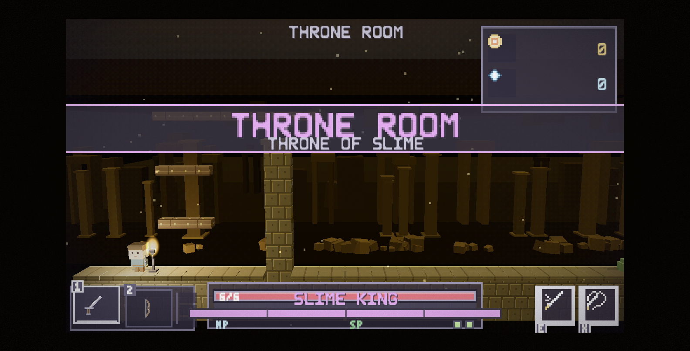
| Boss | File | Muncul |
|---|---|---|
| THE STONE WARDEN | entities/bosses.js:25 | Lantai gunung (world/mountain.js mengisi spawns.boss) |
| THE ARBITER | entities/bosses.js:33 | Lantai trial (world/trial.js) |
Keduanya hadir sebagai spawns.boss, bukan sebagai musuh biasa; hanya mountain.js dan trial.js yang mengisi field itu.
[CODE] systems/modifiers.js (ambience)
horror(dari 600 frame sampai 240 frame).
hp <= 2: setiap 44 frame bila HP 1, setiap 64 frame bila HP 2,disertai R.shake(0.6).
horror > 0.7 tidak pernah benar-benar diam (R.shake(0.35) tiap6 frame).
Semuanya sengaja jarang: suara konstan berhenti jadi menakutkan.
[CODE] src/systems/difficulty.js:31 - bentuk lantai ditentukan kedalaman, bukan dadu. Inilah tangganya:
| Depth | Kunci | Nama | Flavor | Tema visual | Spesial |
|---|---|---|---|---|---|
| 1 | shore | The Shore | plain | shore | Pantai; papan kontrol muncul di sini |
| 2 | cave | The Cave Mouth | carved | cave | Mulai ada parkour |
| 3 | cave | The Deep Cave | carved | cave | - |
| 4 | puzzle | The Torch Hall | plain | prison | Lantai teka-teki |
| 5 | safe | The Waystation | safe | vault | Safe room (toko, enchant, istirahat) |
| 6 | swamp | The Rot Swamp | flooded | swamp | Mulai ada genangan |
| 7 | mountain | The Climb | mountain | mountain | Panjat gunung + boss tengah |
| 8 | flooded | The Sunk Halls | flooded | flooded | Air dalam, piranha |
| 9 | volcanic | The Ash Reaches | carved | volcanic | - |
| 10 | boss | The Throne | boss | throne | Slime King |
kindForDepth(depth) mengembalikan 'boss' untuk depth >= FINAL_DEPTH (10), dan SAFE_BEFORE = [5, 10] berarti sebelum depth 5 dan 10 pemain selalu melewati lantai aman. Jadi urutan nyata satu run: 1 2 3 4 [SAFE] 5 6 7 8 9 [SAFE] 10=BOSS.
Keputusan desain yang tercatat di kode. Dulu flavor lantai di-roll acak, sehingga bisa muncul lantai lava di depth 2 dan pantai di depth 9. Sekarang satu tangga tetap, supaya dungeon terasa sebagai tempat dengan geografi: mulai di pesisir, masuk gua, gua membuka ke rawa, rawa menanjak jadi gunung, gunung mengalir ke aula tergenang, dan pintu terakhir vulkanik.
[CODE] src/art/biomes.js:18. Satu depth, satu palet, jadi tile dan tema 3D tidak bisa lagi berbeda pendapat.
| Key | Nama | Palet (D/d/g/G) | Langit (atas -> bawah) | Warna obor | darkness | lightRadius |
|---|---|---|---|---|---|---|
halls | STONE HALLS | palet dasar | #211b38 -> #12101c | #f2c14e | 0.58 | 76 |
caves | DAMP CAVES | #4a7068 #33524c #79b39d #aee0cd | #183430 -> #0b1a17 | #7de0be | 0.66 | 72 |
prison | RUSTED PRISON | #6b5641 #4a3a2b #b8834f #e0b57e | #3a2a1c -> #17100a | #e8a05a | 0.68 | 72 |
vault | CRYSTAL VAULT | #584d85 #3c3563 #9b8ae0 #cfc4ff | #2b2160 -> #130e2e | #a89bff | 0.66 | 74 |
nest | THE NEST | #6e4148 #4d2c31 #b8636f #e0949c | #3d191d -> #1b090b | #e8737f | 0.70 | 70 |
throne | THRONE OF SLIME | #6b5c3c #4a3f28 #b89a55 #f0d78e | #3a2d14 -> #171106 | #f2c14e | 0.62 | 78 |
shore | THE SHORE | #7a6a52 #5a4e3c #c8b48e #e8dcc0 | #1c2b3a -> #0b141c | #ffe6a8 | 0.50 | 84 |
cave | THE CAVE MOUTH | #3f5a58 #2b403e #6a9490 #a8ccc6 | #0a1a1c -> #050c0e | #7fe8d8 | 0.72 | 70 |
swamp | THE ROT SWAMP | #4a5638 #333d26 #7a8f4e #b8c97a | #0f1a0c -> #070d06 | #b8e06a | 0.70 | 68 |
mountain | THE CLIMB | #5a6070 #3e4450 #8a95a8 #ccd6e4 | #131a26 -> #080b12 | #dceaff | 0.60 | 76 |
flooded | THE SUNK HALLS | #3a5566 #263a48 #6a8fa8 #a8cde0 | #081824 -> #030c14 | #8fd8ff | 0.72 | 70 |
volcanic | THE ASH REACHES | #5a3228 #3a2018 #8f5040 #d08a6a | #1c0a06 -> #0d0403 | #ff8a4a | 0.66 | 74 |
Palet tile sengaja dijaga terang: yang menciptakan suasana adalah lapisan cahaya, bukan palet gelap. Menumpuk palet gelap di bawah pencahayaan gelap dulu membuat layar menjadi lumpur cokelat. Palet taksonomi lain yang memakai satu palet yang sudah ada: puzzle memakai prison, safe memakai vault, boss memakai throne.
[CODE] src/systems/difficulty.js:100 - lantai 1 dan 2 adalah lantai pengajaran yang dipaku: musuh sedikit, tanpa hazard, tanpa elite, lantai pendek, dan ada satu drop berguna yang dijamin. Pertumbuhan naik cepat lalu melandai.
| Rumus | Nilai |
|---|---|
threat(d) | d^1.32 |
enemyCount | tutorial: 2 + d; sesudahnya clamp(round(2 + 1.35*d^1.2), 4, 15) |
hpMult | 1 + 0.17*(d-1)^1.05 |
damageMult | 1 + 0.11*(d-1)^0.9 |
speedMult | 1 + 0.035*(d-1) |
hazardChance | tutorial 0; sesudahnya clamp(0.09 + 0.075*(d-1)^1.15, 0, 0.85) |
hazardCount | tutorial 0; sesudahnya round(1 + (d-2)*0.45) |
spikeRunMax | 1 + floor(d/3) (tidak pernah lebih panjang dari dua lompatan) |
roomCount | clamp(6 + round(d*1.1), 6, 12) |
climbSteps | 3 + round(d*0.9) |
climbSpan | 6 + round(d*1.6) |
pitChance | tutorial 0.15; sesudahnya clamp(0.3 + d*0.06, 0, 0.8) |
plates | tutorial 1; sesudahnya clamp(2 + floor((d-2)/2.5), 2, 3) |
crates | tutorial 1; sesudahnya clamp(2 + floor((d-2)/3), 2, 3) |
torchSpacing | round(26 + d*1.6) - semakin dalam, obor semakin jarang |
chestKeep | clamp(0.72 - d*0.012, 0.5, 0.72) - peti makin jarang tapi makin bagus |
rarityBias | (d-1) * 0.42 |
shakeScale | 1 + (d-1)*0.05 |
Hasil hitung untuk lantai kunci:
| Depth | Musuh | HP x | Damage x | Peluang hazard | Ruangan | Tangga nanjak | Jarak obor | Peti dipertahankan |
|---|---|---|---|---|---|---|---|---|
| 1 | 3 | 1.00 | 1.00 | 0 | 7 | 4 | 28 | 71% |
| 2 | 4 | 1.17 | 1.11 | 0 | 8 | 5 | 29 | 70% |
| 4 | 8 | 1.58 | 1.35 | 20% | 10 | 7 | 32 | 67% |
| 7 | 13 | 2.17 | 1.66 | 49% | 12 | 9 | 37 | 64% |
| 10 | 15 | 2.84 | 1.96 | 85% | 12 | 12 | 42 | 60% |
[CODE] src/systems/modifiers.js:19. Peluang muncul: <4 tidak ada, 4-6 35%, 7-9 60%, 10 100%.
| Modifier | Warna | Efek | Deskripsi di layar |
|---|---|---|---|
| THICK BLOOD | #c0303c | enemyHp: 1.8 | Segala sesuatu di sini lebih sulit dibunuh |
| FRENZY | #e8743b | enemySpeed: 1.25, enemyWind: 0.78 | Mereka bergerak dan menyerang lebih cepat |
| HORDE | #f2c14e | spawnMult: 1.5 | Jauh lebih banyak |
| HONOR GUARD | #e8a05a | allElite: true | Setiap penjaga adalah elite |
| BRITTLE | #a8e4ff | extraDamage: 1 | Setiap luka mengiris lebih dalam |
| FAMINE | #8a4550 | noHearts: true | Tidak ada yang meneteskan penyembuh |
| STARVED | #b98d5c | noCoins: true, chestBonus: 2 | Tidak ada koin, tapi peti lebih kaya |
Modifier DARKNESS ("no torches burn here") sudah dihapus atas permintaan pemain, dan alasannya tercatat di kode: karena hanya cahaya ruangan yang tersisa, efeknya terbaca seperti layar mati, bukan seperti aturan lantai.
[CODE] src/systems/modifiers.js:139
| Fungsi | Nilai |
|---|---|
horrorFor(d) | clamp((d-3)/7, 0, 1) - nol sampai lantai 3, penuh di lantai 10 |
| Vignette | max(vignette, 0.18 + horror*0.22) |
| Grain | max(grain, horror*0.16) bila horror > 0.45 |
| Ambience | Drip/whisper pada round(600 - horror*360) frame |
Angka vignette ini sudah diturunkan dari sebelumnya (0.35 -> 0.80 menjadi 0.18 -> 0.40) karena langkah sebesar itu terbaca seperti layar yang menggelap sendiri saat masuk lantai lebih dalam - separuh dari keluhan "tiba-tiba gelap".
[CODE] src/world/generator.js
Urutan pembuatan satu lantai:
pickFlavor(rng, depth) membaca Difficulty.biomeForDepth(depth).flavor.mountain → world/mountain.js, flooded → world/water.js,carved → world/parkour.js + buildCarved(), sisanya jalur koridor plain.
plantDoors() - menempelkan pintu di posisi yang sudah disediakan.plantTorches() + scatterTorches(rng, out, depth) - obor, dengan jarak daridifficulty.torchSpacing.
supportPlatforms() - menopang platform agar tidak ada yang mengambang.capSpikeRuns(map, maxRun) - membatasi panjang deretan paku.ensureTraversable() - memastikan ada jalan dari spawn ke pintu.reseatDoor(map, out) - memindahkan pintu bila penempatan awalnya tidak masukakal.
closeTraps(map) - menutup jebakan yang bisa membuat lantai tidak selesai.Reach.ensureExit() (Bab 7.7) - jaring pengaman terakhir.hazards.generate() dan puzzle.generate() menempelkan isi.Aturan yang menjadi prinsip. "Tidak ada yang mengambang" dijalankan sebagai pass global, bukan sebagai janji tiap flavor. Karena dungeon adalah domain bawah tanah, sesuatu yang melayang seperti di Mario bukan hanya jelek, ia merusak premis; yang benar adalah medan yang sulit, dorong peti untuk naik, dan tali.
systems/reach.js[CODE] src/systems/reach.js:1 - satu pemilik untuk satu pertanyaan: "dari posisi berdiri ini, sel mana yang bisa kucapai?"
Jawabannya diturunkan dari konstanta yang sama dengan yang dipakai karakter (inv BASE untuk kecepatan dan jumpVel, DS.C untuk gravitasi, entities/player.js untuk lompat udara, badan 8x14, dan gesekan udara 0.14). Dua aturan, dijalankan sekali setelah semua terrain final:
sisinya (tangga yang bisa dipanjat pemain, di sisi pendekatan).
diletakkan di batas jangkauan, lalu lorong dipotong; kalau keduanya tidak muat, lantai tempat pemain berdiri diperpanjang.
Aturan ketiga itulah yang membuat ini jaminan, bukan tebakan: selalu bisa dilakukan, sehingga loop perbaikan selalu maju dan tidak pernah meninggalkan level yang tidak bisa diselesaikan.
Kenapa ini ada. Sebelumnya setiap generator punya jaring pengaman sendiri, dan versi carved menilai level dengan model gerak yang ditulis tangan ("tiga petak mendatar, tiga baris ke atas, sekaligus") - lebih atletis daripada karakternya sendiri. Ia juga berjalan sebelum pass
supportPlatforms(), sehingga pilar dan rak yang dibangun pass itu bisa menembok lorong setelah pemeriksaan selesai. Pilar yang menopang langkan itu terrain yang jujur; pilar yang menopang langkan tanpa jalan naik adalah run yang mati.
[CODE] src/world/hazards.js - empat jenis:
| Jenis | Perilaku |
|---|---|
crumble | Platform yang runtuh saat diinjak (updateCrumble), lalu hilang |
platform | Platform bergerak (carry() membawa pemain yang berdiri di atasnya) |
ball | Bola berduri yang bergerak/berayun |
saw | Gergaji |
Tidak ada hazard sama sekali di lantai safe dan boss (generate() keluar lebih awal untuk kedua kind itu). Jumlah dan peluangnya mengikuti tabel 7.3, dan panjang deretan paku dibatasi spikeRunMax.
[CODE] src/world/puzzle.js:1. Sebuah puzzle adalah vault berdinding kecil berisi peti, ditutup gerbang yang terlalu tinggi untuk dilompati (GATE_TILES = 3). Enam nilai kind dipakai:
| Kind | Mekanik | Angka penting |
|---|---|---|
plate | Dorong peti ke pressure plate, tinggalkan di sana | PUSH_SPEED = 0.55 |
crates | Peti-peti sebagai pijakan dan pemberat | - |
lever | Tarik tuas, lalu masuk sebelum gerbang turun lagi | LEVER_OPEN_FRAMES = 60*7 (7 detik) |
gate | Gerbang (termasuk barrier: true yang harus dibuka) | - |
keygate | Butuh kunci; bisa dijaga warden | puzzle.warden, wardenDown |
plateset | Beberapa plate sekaligus | jumlah dari difficulty.plates |
Aturan jaminan yang penting: vault teka-teki hanya menjaga harta, tidak pernah jalan menuju lantai berikutnya. Teka-teki yang gagal diselesaikan membuat pemain kehilangan loot, bukan kehilangan run.
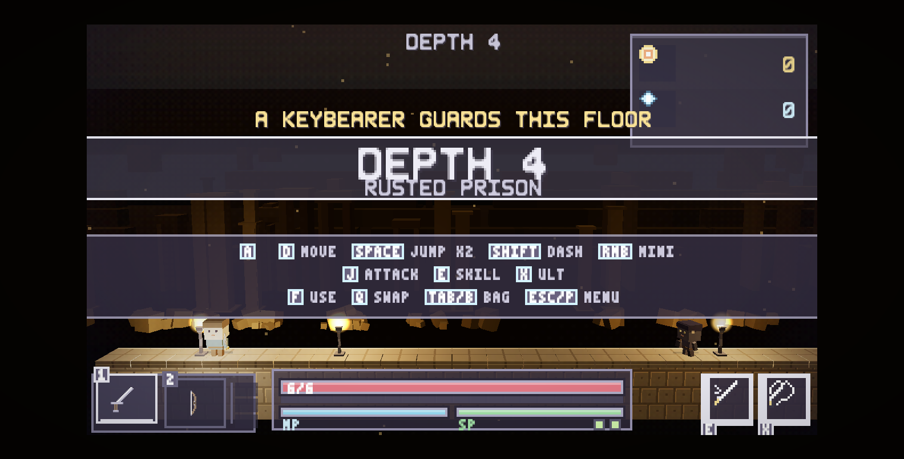
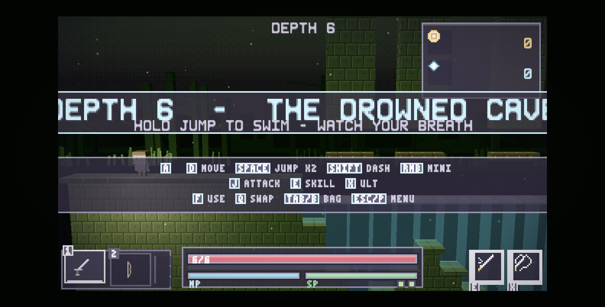
[CODE] src/world/water.js
segalanya), lalu drawOverlay() meletakkan permukaan bercahaya dan caustics di atas apa pun yang berenang di dalamnya. Satu pass akan menyembunyikan perenang atau membuat air terlihat seperti kaca.
stock(g, level) menempatkan piranha di swimSpots hasil perhitungan generator.checkWater), yang menyambungke sistem elemen: basah membuat petir bereaksi ELECTROCUTE.
| File | Peran |
|---|---|
world/mountain.js | Membangun lantai gunung (climb) dan mengisi spawns.boss dengan THE STONE WARDEN |
world/trial.js | Membangun arena ujian dan mengisi spawns.boss dengan THE ARBITER |
world/parkour.js | Platform, tangga, dan tali untuk lantai carved (depth 2, 3, 9) |
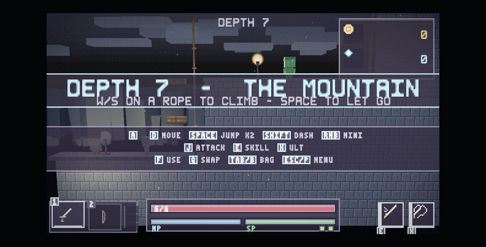
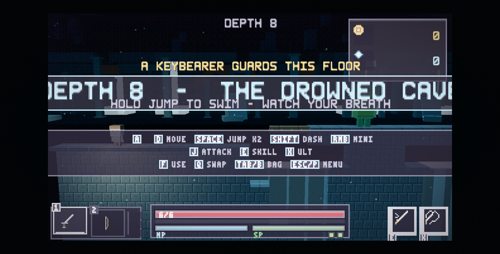
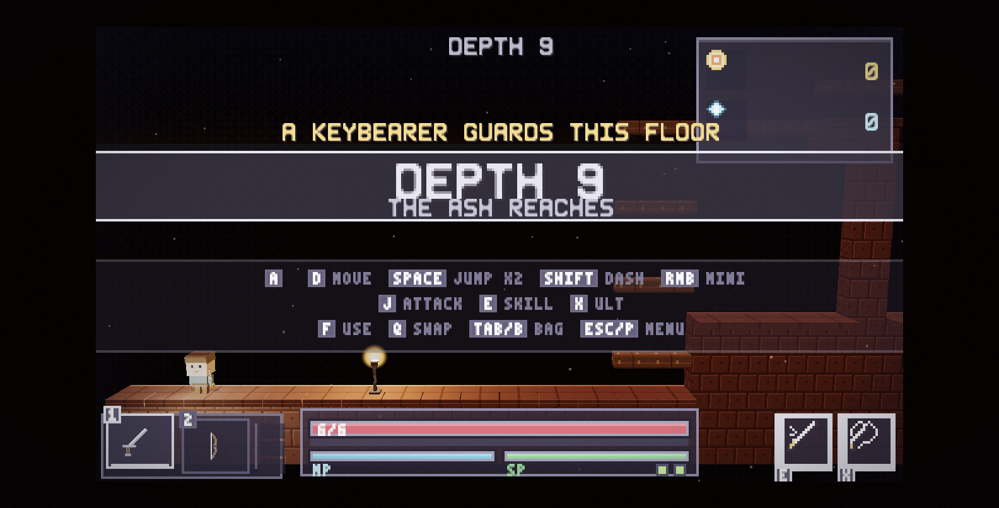
[CODE] src/world/bonus.js
spawnGoldSlime() - slime emas yang kabur saat didekati (fleeBehavior);kalau berhasil dibunuh, ia menjatuhkan hadiah khusus (onDeath).
buildVault() - sayap bonus bersegel tempat vault chest (tier tertinggi,2 item) diletakkan.
generate() dipanggil generator utama untuk menempelkan keduanya ke lantai.core/renderer3d.js (4.169 baris) dari dalamFile terbesar di proyek. Isinya, berurutan seperti di kode:
| Bagian | Baris | Fungsi |
|---|---|---|
| Preset kamera + rig | 130-196 | CAM_PRESETS, camRig, applyCameraPreset |
| Tabel tema | 198-219 | 16 tema (fog, ambient, hemi, dir, dirI) |
| Anggaran cahaya | 234-281 | konstanta intensitas + ukuran pool |
| Tekstur prosedural | 297-380 | makeWallTexture, makeFloorTexture, makePlatformTexture per biome |
| Pembangun voxel | 591-923 | box, instancedBoxes, instancedShards, bandCount, buildSkyTexture |
| Backdrop | 823-1170 | backdropMotes, buildSkyLife, buildBackdrop, updateBackdropLife |
| Tekstur efek | 1172-1264 | flame, glow, portal, rune |
| Init | 1365-1500 | Renderer WebGL, kamera, semua lampu, pool |
| Level | 1713-2245 | Mesh pintu, obor, brazier, gate, tuas, peti, plate, paku, gergaji, platform runtuh |
loadLevel | 2246-2593 | Membangun seluruh dunia untuk satu lantai |
| Registry & audit prop | 2594-2661 | propRegistry, auditAnchors |
| Aktor | 2673-2790 | gripWeapon, ensureHero, ensureEnemyModel, actorScale, ensureChargeAura |
| Elemen/FX | 3198-3500 | Rig efek elemen untuk puddle, burst |
| Update & render | 3700-4135 | Flicker obor, sinkron aktor, render + scissor viewport |
| Ekspor | 4136-4169 | DS.R3D |
DS.R3D adalah satu-satunya pintu masuk ke dunia 3D: loadLevel, render, resize, spawnElemPuddle/Burst/SmokePuff, spawnSwingArc, floorAt, snapToFloor, groundAnchor, auditAnchors, rig, presets, lights, voxels, scene, dan gl (renderer WebGL, yang juga dipakai lapisan layar).
[CODE] src/core/renderer3d.js:255
| Konstanta | Nilai | Peran |
|---|---|---|
AMBIENT_I | 0.12 | Cahaya isian; hanya supaya sisi gelap tidak menjadi hitam murni |
HEMI_I | 0.24 | Gradasi langit-tanah |
KEY_GAIN | 0.34 | Pengali untuk dirI tiap tema (mis. mountain.dirI 0.66 x 0.34 = 0.22) |
LAMP_I | 1.85 | Lampu yang menempel pada pemain |
TORCH_I | 2.30 | Intensitas dasar obor/brazier |
FLAME_LIGHTS | 4 | Jumlah PointLight untuk obor/brazier |
ELEM_LIGHTS | 2 | Jumlah PointLight untuk patch elemen |
backLight | 0x9fb0d0, 0.42 | "Bulan": cahaya dari belakang semuanya |
fillLight | 0xbfd4ff, 0.18 | Isian lembut |
playerLight | 0xffe2a0, LAMP_I, jarak 12, decay 1.4 | Lampu hero |
Alasan anggaran ini dibalik (kuotasi dari komentar di kode): sebelumnya frame dijalankan dengan ambient besar plus key yang hampir seperti siang (0.55 dan sampai ~1.0). Kombinasi itu tidak bisa terlihat seperti apa pun - tanpa arah, setiap sisi blok menerima jumlah yang hampir sama, sehingga batu, dinding, dan langit di belakangnya semuanya mendarat di abu-abu pucat yang sama; frame jadi "terang benderang" dan datar. Sekarang: KEY kuat (berarah), AMBIENT kecil, HEMI rendah. Perbedaan nilai adalah kedalaman visual.
Intensitas obor punya animasi hidup: tiap obor menyimpan baseIntensity dan smooth, lalu bm.smooth didekati menuju TORCH_I dengan keyed flicker, dan pass menentukan apakah obor itu benar-benar menyala.
Bug besar yang pernah terjadi (dan pelajarannya). Sebelum pool tetap, setiap obor membuat PointLight-nya sendiri tanpa batas: depth 5 dengan 11 obor berarti 14 point light. Three.js meng-compile shader per jumlah lampu, sehingga tiap obor baru = hit dan recompile semua material dunia; begitu jumlahnya melewati batas uniform GPU, program gagal dan material yang terdampak digambar hitam. Skill api menambah lampu lagi di atas itu, jadi gejalanya persis seperti yang dilaporkan pemain: "tiba-tiba gelap kalau pakai skill api". Perbaikannya adalah pool tetap (
FLAME_LIGHTS + ELEM_LIGHTS= 6 lampu dunia, konstan): setiap frame pool diarahkan ke obor/patch terdekat dari pemain, dan jumlah lampu yang dilihat shader tidak pernah berubah. Lampu tambahan tidak lagi mengubah apa pun.
[CODE] src/core/renderer3d.js:924 (buildBackdrop)
Setiap tema punya spec latar dengan beberapa band yang digambar berlapis:
bandCount(spec, WU) menghitung jumlah elemen dari lebar dunia dibagispec.sp (jarak antar elemen).
rise (pergeseran vertikal), drift (gerak horizontal, default0.35), col, size, alpha, pulse (default 0.18), dan digambar dengan AdditiveBlending + depthWrite: false.
stars (bintang) dan bentuk siluet khasnya: trees, reeds,bones, columns, spires, arches, crystals, ice, rubble.
Kehidupan latar dikelola updateBackdropLife(time, dt) + buildSkyLife:
| Gerakan | Sumber |
|---|---|
| Kabut/ember mengalir | backdropMotes dengan kecepatan dan denyut opasitas sendiri |
| Band bernapas | Tabel BREATHE (amp/spd): trees 0.018/0.62, reeds 0.030/1.05, bones 0.009/0.48, columns 0.005/0.38, spires 0.006/0.44, arches 0.004/0.34, crystals 0.014/0.85, ice 0.010/0.52, rubble 0.004/0.70 |
| Awan bergeser | Band awan dengan drift |
| 6 siluet terbang | Burung mengepak melintasi langit, hanya pada tema beratap terbuka |
Catatan penting untuk pass berikutnya. Backdrop yang sekarang adalah geometri padat dan sudah bergerak, tetapi ia belum bertekstur sesuai tema - ini permintaan pemain yang masih terbuka: "backgroundnya harus sesuai tema DAN bertekstur". Yang ada sekarang adalah bentuk siluet + warna, bukan tekstur bergambar (lihat register isu).
[CODE] src/core/renderer3d.js:145
| Preset | Label | yaw | pitch | dist | fov |
|---|---|---|---|---|---|
| 0 (default) | SIDE 0/7 | 0 | 0.12 | 26 | 39.5 |
| 1 | THREE-Q 40/24 | 0.70 | 0.42 | 26 | 39.5 |
| 2 | STEEP 60/35 | 1.05 | 0.61 | 24 | 42 |
| 3 | FILM 20/16 | 0.35 | 0.28 | 30 | 36 |
Trade-off-nya diukur dan tercatat: yaw A derajat menampilkan cos(A) dari lebar level - 40 derajat menyisakan 77% lapangan, 60 derajat hanya 50% - dan kamera miring menggeser level secara diagonal di layar, sehingga langkan berhenti menjadi garis horizontal. Karena itu default-nya tetap 0/7 (tembakan samping lurus) dan preset lain hanya satu tombol (F6), tidak pernah menjadi keadaan saat boot: pilihannya tidak disimpan, jadi game tidak mungkin mulai dalam keadaan miring.
[CODE] src/core/voxel.js (1.206 baris) + DS.Voxel.build(key, opts) dipanggil dari renderer3d untuk: chest (dengan tier, termasuk gembok untuk peti terkunci), semua jenis monster (DS.Voxel.build(e.kind), dengan tier dan tint), hero (dengan seluruh armor yang dipakai), shrine, weapon (buildWeapon(type, rarityColor)), floor, wall, platform, puddle/shards FX. Model dibangun dari kotak (box) dan shard (instancedShards) - itulah sebabnya siluetnya blocky, bukan low-poly halus.
[CODE] src/core/renderer3d.js:2594 + 2626
floorAt(map, px, py) adalah satu-satunya cara sebuah prop boleh mengetahuidi mana tanahnya; snapToFloor dan groundAnchor dibangun di atasnya.
propRegistry() mendaftarkan setiap prop: chest (boxed), pickup (boxed),plate, brazier, lever, torch, shrine, doorway. Crate dan gate sengaja tidak di-anchor karena transformasinya ditulis ulang setiap frame dari badan 2D (peti didorong, gerbang terangkat), jadi mengauditnya hanya akan melaporkan keadaan sesaat.
auditAnchors(g, tolerance) mengukur jarak kaki setiap prop dari permukaan yangia klaim: celah positif berarti melayang, negatif berarti terbenam. Keduanya dilarang, dan laporannya menyebut nama prop-nya. Gerbang ini diekspos di DS.R3D supaya pass QA headless bisa memastikan hasilnya kosong untuk setiap kedalaman dan seed tanpa mengambil satu screenshot pun.
[CODE] src/core/audio.js (257 baris). Tidak ada file audio: seluruh suara adalah osilator dan noise dari Web Audio API.
| Kelompok | SFX |
|---|---|
| Gerak | jump, land, dash |
| Tempur | swing, hit, crit, block, hurt, die, slam |
| Elemen | fire, ice, lightning, cast, shoot |
| Item | coin, shard, heal, pickup, enchant, salvage, upgrade |
| Sistem | menuMove, menuPick, locked, error, stairs, victory |
| Ambience | drip, whisper, (detak jantung memakai slam) |
Musik berjalan sebagai mood (MOODS) yang berubah sesuai konteks - mis. calm di menu dan setelah Slime King mati. Audio.unlock() dipanggil pada input pertama karena browser memblokir audio sebelum ada interaksi.
[CODE] src/core/storage.js - satu kunci localStorage['ds_stats']:
| Field | Arti |
|---|---|
bestDepth | Kedalaman terbaik |
totalKills | Total kill seluruh run |
runs | Jumlah run |
bestItemName, bestItemRarity | Item terbaik yang pernah didapat |
fastestClearFrames | Waktu clear tercepat (hanya diisi bila run tamat) |
Filosofinya tertulis di komentar file: game ini roguelike murni, tidak ada meta-progression, tidak ada unlock, tidak ada statistik yang dibawa antar-run; penyimpanan ini kosmetik dan hanya memberi makan menu serta layar akhir. Kalau localStorage dimatikan (mode privat), game menurunkan diri ke nilai default dan menulis peringatan, bukan gagal.
Sudah dirinci di Bab 3.4. Yang perlu dicatat di level sistem: Input.poll() + Input.endFrame() dipanggil per langkah simulasi dari main.js, sehingga status "baru ditekan" hanya berlaku satu langkah; menekan dan melepas di antara frame tetap tertangkap karena pressed/released adalah set, bukan boolean.
| Hal | Nilai / catatan |
|---|---|
| Payload runtime | index.html + libs/three.min.js (603 KB) + src/ (1,3 MB) |
| Langkah simulasi | Tetap 60 Hz, maksimal 5 langkah per frame; tab tidak aktif dipangkas |
| Lampu dunia | 6 point light tetap + 3 directional + ambient (jumlah tidak pernah berubah) |
| Pool bayangan | shadowPool - mesh blob shadow dipakai ulang, sisanya visible = false |
| Instancing | instancedBoxes / instancedShards untuk detail yang banyak |
| Tekstur | Dibuat prosedural saat muat (makeWallTexture dll.), tidak ada file gambar |
| Viewport | Dunia dirender dengan scissor ke frame bermain, lalu canvas diserahkan ke lapisan UI |
[CODE] wrangler.jsonc:
{
"name": "dungeon-scrolling",
"compatibility_date": "2026-09-21",
"assets": { "directory": "." },
"routes": [{ "pattern": "dungeonscrolling.moneyspender.net", "custom_domain": true }]
}
Artinya seluruh folder proyek diunggah sebagai aset statis. .assetsignore hanya mengecualikan node_modules/, .git/, .claude/, .freebuff/, backup/ dan file log. Yang ikut terunggah karena itu: tools/ (generator art Python + solver), prompts/, assets/ (18 MB art konsep + 127 screenshot pengembangan), docs/ dan dist/, semua *.md, devserver.py, .codex/, skills-lock.json, .mcp.json, dan wrangler.jsonc itu sendiri.
Perbaikan yang diusulkan (dan sudah dilakukan di pass ini):
# tambahan .assetsignore .agents/ .codex/ docs/ dist/ prompts/ tools/ assets/ *.md *.py package.json package-lock.json skills-lock.json .mcp.json wrangler.jsonc
Setelah itu yang naik ke Cloudflare hanya index.html, libs/ dan src/ - sekitar 1,3 MB, dan source code pengembangan tidak ikut publik.
# 1. Word (super detail) python tools/docs/build_docx.py # 2. HTML untuk PDF (parser yang sama) python tools/docs/build_html.py # 3. PDF lewat Chrome headless (nol dependensi) node tools/docs/build_pdf.js dist/Dungeon-Scrolling-GDD-v5.1.0.html # 4. cek tata letak tanpa mencetak (0 overflow, 0 gambar rusak) node tools/docs/build_pdf.js dist/Dungeon-Scrolling-GDD-v5.1.0.html --probe
Isi dokumen ada di docs/NN-*.md (markdown, satu bab per file), metadatanya di docs/meta.json, gambarnya di docs/img/. Urutan bab mengikuti nama file.
Inilah bagian yang diminta sebagai acuan kerja: setiap isu punya nomor tetap supaya bisa disebut di commit, changelog, dan percakapan. Kolom Bukti memakai label dari Bab 1: [CODE:file:baris] berarti dibaca dari sumber, [RUNTIME] berarti diukur sambil game berjalan.
| Tingkat | Arti |
|---|---|
| S1 | Blocker: fitur tidak bisa dipakai, atau data/progres pemain bisa hilang. |
| S2 | Mayor: fitur terlihat rusak, janji ke pemain tidak ditepati, atau build yang terbit salah isi. |
| S3 | Minor: kualitas kode/aset, bloat repo, kode mati. |
| S4 | Kosmetik/kerapian. |
| ID | Judul singkat | Area | Tingkat | Bukti |
|---|---|---|---|---|
| BUG-001 | Deploy mengunggah source tooling + 18 MB aset pengembangan | Penerbitan | S2 | CODE |
| BUG-002 | Cache-bust tidak konsisten di index.html | Build/runtime | S2 | CODE |
| BUG-003 | camp3d.js (298 baris) modul mati; menu tetap 2D | Scene | S2 | CODE |
| BUG-004 | art/backdrop.js (324 baris) modul mati | Art | S3 | CODE |
| BUG-005 | systems/lighting.js (43 baris) sisa modul tanpa fungsi | Sistem | S3 | CODE |
| BUG-006 | updatePause/drawPause kode mati di game.js | Scene | S3 | CODE |
| BUG-007 | ELEMENT_SHORT tidak punya elemen wind | UI | S2 | CODE |
| BUG-008 | Tidak ada nama pemain, leaderboard, atau cloud save | Fitur | S2 | CODE |
| BUG-009 | Kit.audit() tidak pernah dijalankan otomatis | QA | S2 | CODE |
| BUG-010 | package.json tanpa scripts, tidak ada npm test | DX | S4 | CODE |
| BUG-011 | backup/ 1,4 MB (dua salinan penuh src) ter-commit | Repo | S3 | CODE |
| BUG-012 | .codex/config.toml (konfigurasi agen) ter-commit | Repo | S4 | CODE |
| BUG-013 | 127 screenshot pengembangan + art konsep ter-commit | Repo | S3 | CODE |
| BUG-014 | drawControls mengubah state di jalur gambar | UI/loop | S3 | CODE |
| BUG-015 | Readout kamera F6 ikut terkirim ke pemain | UI | S4 | CODE |
| BUG-016 | Route custom domain hardcoded di wrangler.jsonc | Penerbitan | S3 | CODE |
| BUG-017 | Jaminan "lantai bisa diselesaikan" belum diverifikasi ulang di runtime | Worldgen | S2 | perlu uji |
| BUG-018 | Latar belum bertekstur sesuai tema | Visual | S2 | CODE |
| BUG-019 | UI seluruhnya huruf kapital bitmap: tidak ada jalur aksesibilitas | UI | S4 | CODE |
| BUG-020 | Teks UI hardcoded bahasa Inggris, tidak ada sistem lokalisasi | UI | S3 | CODE |
Area: penerbitan. Bukti: [CODE:.assetsignore:1] hanya mengecualikan node_modules/, .git/, .claude/, .freebuff/, backup/ dan *.log; [CODE:wrangler.jsonc:1] memakai assets.directory: ".". Dampak pemain: situs menjadi berat (18 MB+ sebelum gameplay dimuat pada kunjungan pertama), dan seluruh source pengembangan (tools/, prompts/, devserver.py, docs/) jadi publik. Perbaikan: tambahkan pengecualian seperti di Bab 8.11, lalu verifikasi dengan npx wrangler deploy --dry-run sebelum deploy nyata supaya daftar file yang naik bisa dibaca angkanya.
Area: build/runtime. Bukti: [CODE:index.html:79] <script src="./src/entities/player.js?t=123"> sementara 59 script lain memakai ?v=2. Dampak pemain: setelah update, browser/CDN bisa menyajikan player.js versi lama sementara seluruh file lain baru - gejalanya bug yang aneh dan tidak konsisten ("kadang perilaku lama"), dan sangat sulit didiagnosis. Perbaikan: samakan menjadi satu versi (mis. ?v=5.1.0) untuk semua script, dan naikkan angka itu setiap rilis.
camp3d.js modul mati (S2)Area: scene. Bukti: [CODE:src/scenes/camp3d.js:290] mendefinisikan DS.Camp3D, dan grep -rn "DS.Camp3D" src/ hanya menemukan definisi itu - tidak ada pemanggil. Menu masih menggambar kamp 2D lewat [CODE:src/scenes/menu.js:157] (camp(state): hero sprite, api, ember). Dampak pemain: layar menu utama tidak mendapat diorama 3D yang sudah ditulis, jadi menu masih terasa 2D sementara gameplay-nya 3D - persis keluhan "utamakan 3D". Perbaikan: pilih satu: (a) pasang Camp3D sebagai pre-pass menu seperti rancangan aslinya, atau (b) hapus modulnya supaya tidak ada dua implementasi. Rekomendasi: (a), karena Kit.addPrePass dan DS.UI3.addPrePass sudah tersedia untuk itu.
art/backdrop.js modul mati (S3)Bukti: [CODE:src/art/backdrop.js:319] mendefinisikan DS.Backdrop, tidak ada pemakaian lain. File ini masih dimuat index.html. Perbaikan: hapus file + tag script-nya (324 baris lebih ringan), atau jelaskan perannya kalau masih akan dipakai.
systems/lighting.js sisa modul (S3)Bukti: [CODE:src/systems/lighting.js] tinggal 43 baris dan tidak menggambar apa pun; [CODE:src/core/renderer3d.js:17] masih berkomentar bahwa cahaya "dikomposit di atas kanvas ini di src/systems/lighting.js" - komentar yang sudah salah. Perbaikan: hapus modul dan perbaiki komentarnya, atau kembalikan fungsinya. Selama komentar itu salah, pembaca berikutnya akan mencari sistem yang tidak ada.
Bukti: [CODE:src/scenes/game.js:784] (updatePause) dan :811 (drawPause) tidak pernah dipanggil; g.paused sebenarnya adalah keadaan "layar profil terbuka" ([CODE:src/ui/profile.js:51], [CODE:src/scenes/game.js:705] dan :895). Perbaikan: hapus keduanya, atau sambungkan kembali bila memang pause terpisah dari profil yang diinginkan (perlu keputusan pemilik game).
wind tidak punya label pendek (S2)Bukti: [CODE:src/ui/ui.js:22] - ELEMENT_SHORT memuat fire, ice, lightning, poison, water, earth, leaf, tidak ada `wind`. Dampak pemain: senjata berprefix Gale (angin) menampilkan kartu tanpa label elemen, jadi pemain kehilangan petunjuk bahwa senjatanya elemental - dan angin adalah elemen yang justru butuh penjelasan (ia mengaduk aura, bukan menambahkan status). Perbaikan: tambahkan wind: 'GALE' (atau WIND) dan sesuaikan lebar kolom kartu bila perlu.
Bukti: [CODE:src/core/storage.js] hanya menyimpan enam angka rekor; tidak ada permukaan input teks sama sekali di src/ (tidak ada <input>, tidak ada prompt nama). Fitur ini pernah diminta tetapi belum pernah dibangun. Perbaikan: butuh satu modul baru (mis. core/profile.js) untuk nama + identitas run, satu layar entri nama sebelum loadout, penampilan nama di atas kepala pemain (billboard 3D), dan satu backend penyimpanan. Rekomendasi backend: Cloudflare D1 atau KV lewat Worker yang sudah ada - gratis, satu akun dengan hosting, dan latensinya rendah karena Worker + database berada di edge yang sama; Supabase (bonus fitur lebih banyak: auth, realtime) menjadi pilihan kedua kalau nanti butuh akun pengguna sungguhan dan dasbor admin.
Bukti: [CODE:src/ui/kit.js:105] menyediakan audit(), tetapi tidak ada skrip/CI yang memanggilnya (package.json kosong dari scripts). Dampak: gerbang yang dirancang mencegah panel saling menimpa tidak menahan apa pun; bug tata letak hanya ketahuan kalau ada yang melihat screenshot. Perbaikan: tambahkan satu skrip headless (node tools/qa/audit-ui.js) yang membuka tiap layar dan meng-assert audit() kosong.
package.json (S4)Bukti: [CODE:package.json:1] hanya berisi dependencies: { jsdom }. Dampak: kontributor (dan agen) mencoba npm run dev / npm test, gagal, lalu mencari cara lain. devserver.py dan skrip dokumen ini sebaiknya didaftarkan sebagai script.
backup/ ter-commit (S3)Bukti: [CODE] git ls-files backup = 1.481.255 byte (dua salinan penuh: src_backup_20260819/ dan src_pre_5.0.0/). Perbaikan: keluarkan dari repo (masih ada di riwayat git) dan taruh di luar folder kerja, atau pindahkan ke satu release/tag. .gitignore sudah memuat backup/? Tidak - hanya .assetsignore yang mengecualikannya, jadi ia masih ter-track.
.codex/config.toml ter-commit (S4)Bukti: [CODE] git ls-files .codex → config.toml. Perbaikan: tambahkan .codex/ ke .gitignore dan hapus dari index.
Bukti: [CODE] assets/preview/ memuat 127 PNG pengembangan dan seluruh folder itu ter-track (mis. assets/preview/bg_2x.png), padahal .gitignore memuat pola assets/preview/. Artinya file-file itu masuk sebelum aturan ignore dibuat. Dampak: repo membengkak dan setiap git status/clone menanggungnya. Perbaikan: git rm -r --cached assets/preview (file tetap ada di disk, dan dokumen ini justru memakainya sebagai bahan).
Bukti: [CODE:src/ui/ui.js:166] - drawControls(g) menurunkan g.controlsTimer saat menggambar. Dampak: timer bergantung pada berapa kali frame digambar, bukan pada waktu simulasi; saat frame drop atau pause, durasi hint berubah. Ini juga melanggar aturan "update mengubah state, draw hanya menggambar". Perbaikan: pindahkan penurunan timer ke update().
Bukti: [CODE:src/ui/ui.js:143] (drawCamReadout) dipanggil dari hud() saat R3D.rig.show > 0. Perbaikan: bungkus dengan flag debug (g.debug) supaya hanya muncul saat F1 aktif. Berguna bagi pengembang, membingungkan bagi pemain.
Bukti: [CODE:wrangler.jsonc:6] memuat routes untuk dungeonscrolling.moneyspender.net. Dampak: wrangler deploy gagal total bila zone itu tidak ada di akun Cloudflare yang sedang login - dan pesannya tidak menyebut bahwa penyebabnya adalah route. Perbaikan: dokumentasikan sebagai prasyarat, atau deploy dulu ke *.workers.dev lalu pasang domain dari dashboard.
Bukti: [CODE:src/systems/reach.js:1] menerapkan rungs + step darurat, dan tools/solve-levels.js ada sebagai solver. Namun sejak pass terakhir yang gagal di tengah jalan, belum ada bukti runtime bahwa lantai yang di-roll sekarang selalu bisa dituntaskan, sementara keluhan pemain terakhir justru "masih belum bisa naik". Perbaikan (prioritas tertinggi untuk pass berikutnya): jalankan node tools/solve-levels.js untuk depth 1-10 dengan beberapa seed, lalu verifikasi satu tanjakan yang gagal sebelumnya di browser: catat p.y sebelum dan sesudah percobaan naik. Kalau rungs tidak muncul, periksa urutan pemanggilan Reach.ensureExit() terhadap supportPlatforms() di generator.js:686.
Bukti: [CODE:src/core/renderer3d.js:924] - latar dibangun dari band siluet, warna, dan mote; tidak ada tekstur bergambar per tema. Dampak: pemain memintanya dua kali: "background harus sesuai DAN bertekstur". Perbaikan: tambahkan lapisan tekstur per tema (shore: pasir/karang, cave: batuan basah, swamp: lumut/akar, mountain: batu bersalju, flooded: keramik bawah air, volcanic: bara) pada band terjauh, plus pencahayaan tepi (backLight sudah ada) supaya tekstur tetap terbaca saat gelap.
Bukti: [CODE] seluruh teks memakai font bitmap kapital 3x5/5x7; tidak ada opsi ukuran atau mode teks sistem. Perbaikan: tambahkan opsi "besar" yang menaikkan face teks atau menyediakan HUD ringkas. Ini juga membantu pemain di monitor kecil.
Bukti: [CODE] semua string UI hardcoded (mis. START RUN, DEPTH, THE DUNGEON IS CLEARED) di 20+ file. Perbaikan: kumpulkan string ke satu tabel (src/core/text.js) dengan kunci, lalu tambahkan bahasa Indonesia sebagai pilihan. Ini pekerjaan mekanis yang lebih baik dilakukan sebelum menambah banyak teks baru.
| Permintaan | Status | Rujukan |
|---|---|---|
| Nama pemain + tampil di atas kepala pemain | Belum ada | BUG-008 |
| Leaderboard saat mati, nama tetap tersimpan | Belum ada | BUG-008 |
| Penyimpanan online (Cloudflare/Supabase) | Belum ada | BUG-008 |
| Latar bertekstur per tema | Belum ada | BUG-018 |
| Ruangan gelap dengan cahaya dari latar (backlight) | Dihapus atas permintaan "ilangin aja"; backLight tetap ada sebagai cahaya bulan | Bab 7.4, 8.2 |
| Animasi serang 3D per senjata (swing/trail, thrust, draw, cast) | Ada (Bab 5.6); perlu penajaman visual | - |
| Kamera: lookahead + shake + zoom boss | Sebagian: shake ada (R.shake), lookahead/zoom boss belum | - |